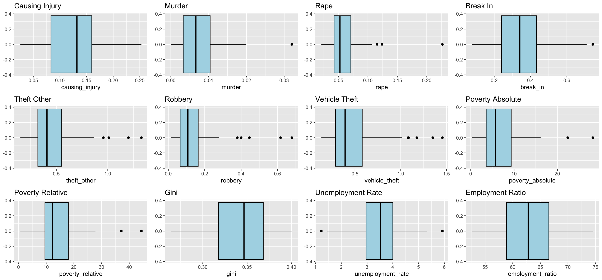
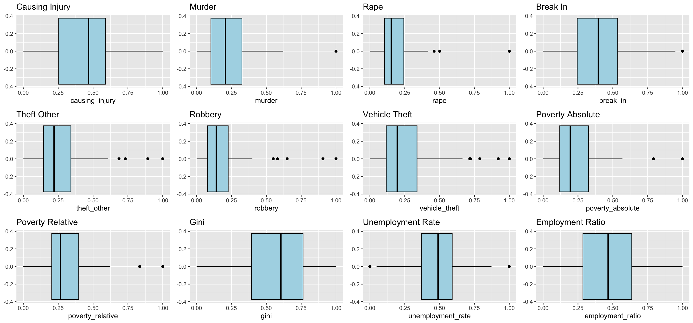
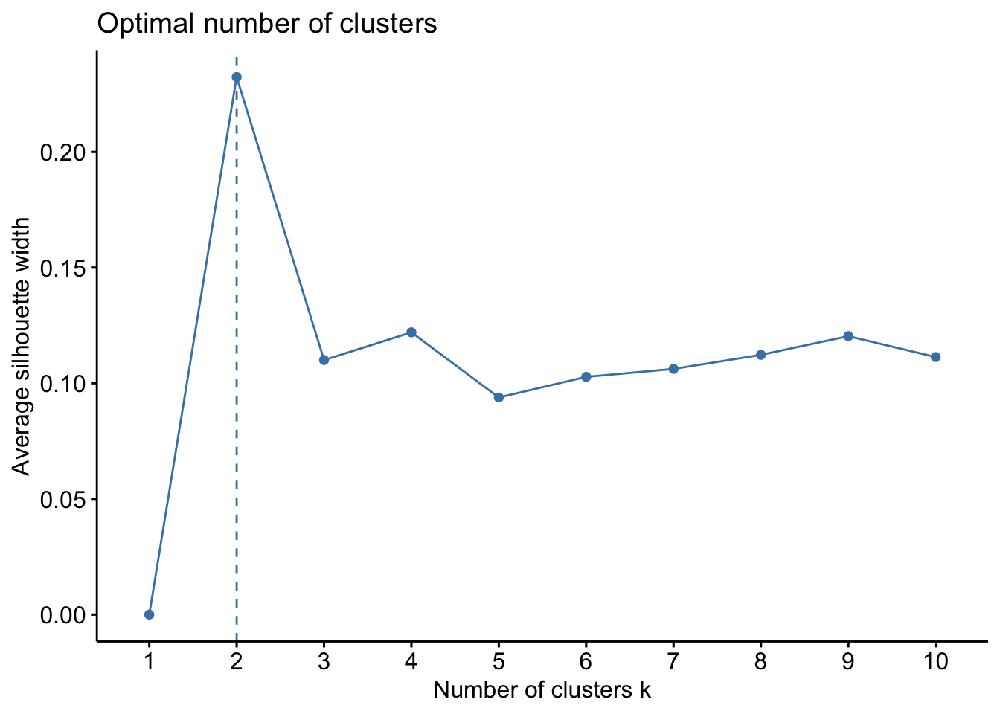
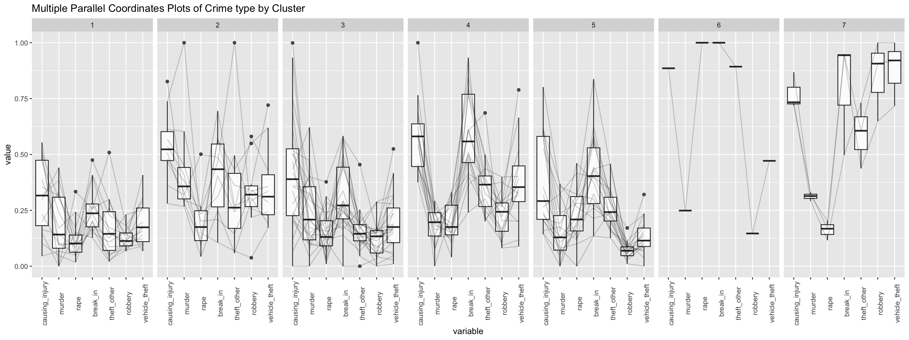
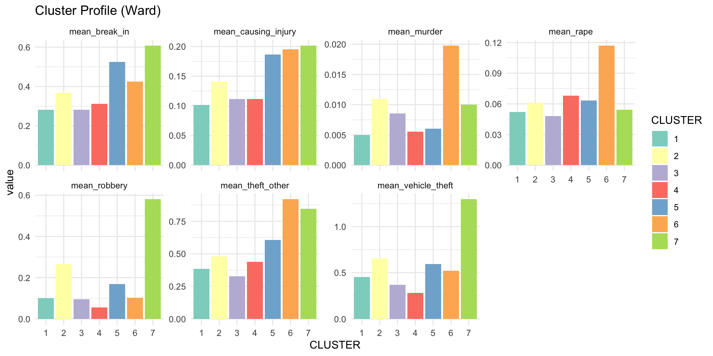
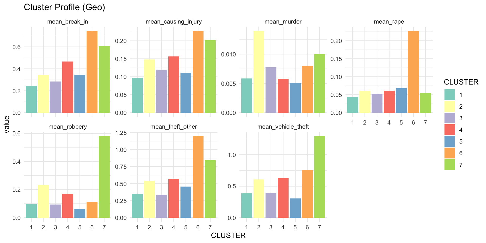
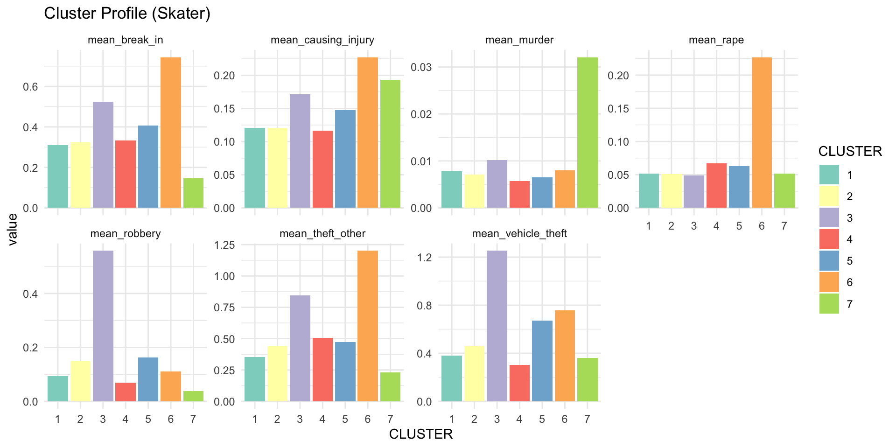
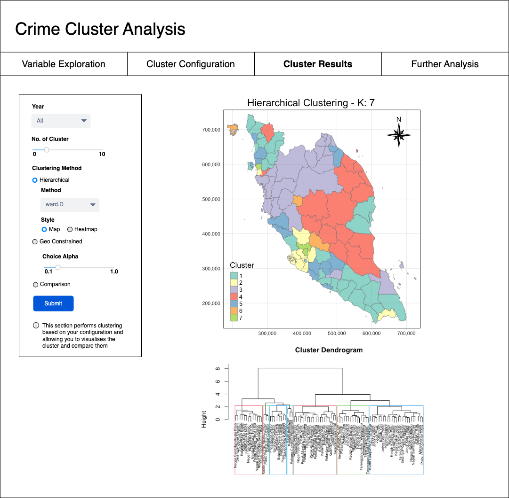
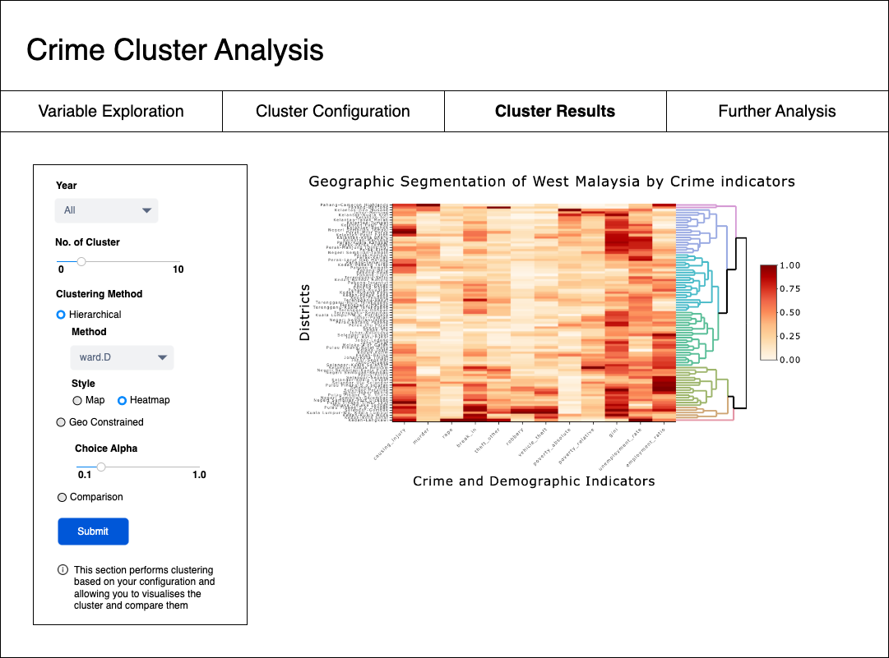

pacman::p_load(sf, st, tidyverse, raster, tmap, tmaptools, ggplot2, gridExtra, spatstat, sfdep, spdep, ClustGeo,
ggpubr, cluster, factoextra, NbClust,
heatmaply, corrplot, psych, GGally)Take-home Exercise 3
Take-home
In this exercise, we will develop an interactive Geospatial Analytics Shiny App to enable users to explore crime patterns in West Malaysia. By leveraging spatial clustering techniques, the app will provide an interface to uncover insights into the spatial distribution of crime and identify potential clusters.
1. Introduction
Crime is a pressing issue in Malaysia, impacting both urban and rural communities. Understanding the spatial and temporal patterns of crime is crucial for law enforcement agencies to allocate resources effectively and implement targeted crime prevention strategies. Traditional crime analysis methods often rely on basic statistical analysis and simple geographic visualizations. However, by employing advanced statistical techniques such as clustering, we can delve deeper into the underlying factors driving crime and identify specific hotspots or crime clusters.
1.2 Motivation
This project aims to leverage spatial clustering techniques to identify distinct crime patterns and analyze the socio-economic factors associated with these patterns. By integrating crime data with additional socio-economic indicators such as labor force statistics and inequality measures, we can gain a more comprehensive understanding of the factors influencing crime in Malaysia (West).
1.3 Objectives
- Apply spatial clustering techniques to visualize similar regions based on crime patterns enriched with socio-economic data.
- Interpret and analyse spatial clusters with crime characteristics and their relationship with socio-economic factors and deem their suitability for the Shiny application.
- Develop a storyboard for the Shiny application incoperating effective and interative visualizations to communicate the findings to a diverse audience.
2. Packages and Data
2.1 Packages Required
The following will be the packages used for this study and the Shiny Application:
- sf: For working with simple features, a standard for spatial data in R.
- tidyverse: A collection of packages for data manipulation and visualization, including dplyr, tidyr, ggplot2, etc.
- tmap: For creating static and interactive maps.
- ggplot2: A powerful visualization package for creating static plots.
- gridExtra: For arranging multiple plots on a single page.
- sfdep: For spatial dependency analysis.
- ClustGeo: For spatial clustering analysis.
- cluster: For various clustering algorithms, including K-means and hierarchical clustering.
- factoextra: For visualizing and evaluating clustering results.
- NbClust: For determining the optimal number of clusters.
- heatmaply: For creating interactive heatmaps.
- corrplot: For visualizing correlation matrices.
- GGally: For advanced data visualization, including pair plots and correlation plots.
2.2 Data Required
There are a total of 5 aspatial datasets used in this project.
Malaysia – Crime by District and Crime Type from data.gov.my in csv format.
Malaysia - Subnational Administrative Boundaries with included administrative regions in shapefile format.
Malaysia – Annual Principal Labour Force Statistics by District from data.gov.my in csv format.
Malaysia – Poverty by Administrative District from data.gov.my in csv format.
Malaysia – Income Inequality by District from data.gov.my in csv format.
Malaysia – Population by District from data.gov.my in csv format.
2.2.1 Aspatial Data
We start by importing the crime rate and population csv file into R.
crime_df <- read_csv("data/aspatial/crime_district.csv")
population_df <- read_csv("data/aspatial/population_district.csv")2.2.2 Geospatial Data
Next, we import the administrative (Level 2, District) regions of Malaysia.
mys_sf <- read_sf(dsn = "data/geospatial/mys_adm_unhcr_20210211_shp",
layer = "mys_admbnda_adm2_unhcr_20210211") %>%
st_transform(crs = 3168)2.2.3 Enrichment Data
We will also be importing and working we several other potentially related data to crime rates in Malaysia and uncover if there is any further insights which could be extracted from their usage. The following teh details of the fields:
- Poverty by District: Poverty rates by administrative district from 2019 to 2022
poverty_absolute: Proportion of households with monthly income below the Poverty Line Income (PLI)poverty_relative: Proportion of households with monthly income below half the district median income
- Inequality by District: Gini coefficient by administrative district from 2019 to 2022.
gini: The Gini coefficient based on the distribution of households’ gross monthly income
- Labour Force Statistics by District: Annual principal labour force statistics at district level, including unemployment and participation rates.
lf: The number (in thousands) of employed and unemployed individuals. This figure also represents the number of people participating in the labour force.lf_employed: The number (in thousands) of people who worked at least one hour for pay, profit or family gain, in thousands of peoplelf_unemployed: The number (in thousands) of people who did not work but were looking for work or available to worklf_outside: The number (in thousands) of people not classified as employed or unemployed, including housewives, students, early retired, disabled persons and those not interested in looking for a jobu_rate: Ratio of unemployed to labour force sizep_rate: Ratio of the labour force size to the working-age (15-64) populationep_ratio: Ratio of the number of employed people to the working-age (15-64) population
poverty_df <- read_csv("data/aspatial/poverty_district.csv")
inequality_df <- read_csv("data/aspatial/inequality_district.csv")
labour_df <- read_csv("data/aspatial/labour_district.csv")2.3 Wrangling
Next we shall prepare our data for analysis, which includes proper mapping of data and joining for the aspatial datasets with the geospatial dataset.
2.3.1 Data Preparation
Before we can check the mappings we convert state and district to upper to ensure a smooth matching and join. We also extracted the year as a column since the aspatial data are all annual.
Convert state and district to upper for matching
crime_df <- crime_df %>%
mutate(year = year(date),
state = toupper(state),
district = toupper(district))
crime_df# A tibble: 19,152 × 7
state district category type date crimes year
<chr> <chr> <chr> <chr> <date> <dbl> <dbl>
1 MALAYSIA ALL assault all 2016-01-01 22327 2016
2 MALAYSIA ALL assault all 2017-01-01 21366 2017
3 MALAYSIA ALL assault all 2018-01-01 16902 2018
4 MALAYSIA ALL assault all 2019-01-01 16489 2019
5 MALAYSIA ALL assault all 2020-01-01 13279 2020
6 MALAYSIA ALL assault all 2021-01-01 11495 2021
7 MALAYSIA ALL assault all 2022-01-01 10348 2022
8 MALAYSIA ALL assault all 2023-01-01 10453 2023
9 MALAYSIA ALL assault causing_injury 2016-01-01 5531 2016
10 MALAYSIA ALL assault causing_injury 2017-01-01 5024 2017
# ℹ 19,142 more rowspopulation_df <- population_df %>%
mutate(year = year(date),
state = toupper(state),
district = toupper(district))
population_df# A tibble: 319,200 × 8
state district date sex age ethnicity population year
<chr> <chr> <date> <chr> <chr> <chr> <dbl> <dbl>
1 JOHOR BATU PAHAT 2020-01-01 both overall overall 495. 2020
2 JOHOR BATU PAHAT 2020-01-01 both overall bumi_malay 311. 2020
3 JOHOR BATU PAHAT 2020-01-01 both overall bumi_other 5.1 2020
4 JOHOR BATU PAHAT 2020-01-01 both overall chinese 140. 2020
5 JOHOR BATU PAHAT 2020-01-01 both overall indian 6.9 2020
6 JOHOR BATU PAHAT 2020-01-01 both overall other_citizen 1.8 2020
7 JOHOR BATU PAHAT 2020-01-01 both overall other_noncitizen 30.2 2020
8 JOHOR BATU PAHAT 2020-01-01 both 0-4 overall 30.3 2020
9 JOHOR BATU PAHAT 2020-01-01 both 0-4 bumi_malay 21.3 2020
10 JOHOR BATU PAHAT 2020-01-01 both 0-4 bumi_other 0.5 2020
# ℹ 319,190 more rowsmys_sf <- mys_sf %>%
mutate(ADM1_EN = toupper(ADM1_EN),
ADM2_EN = toupper(ADM2_EN))
mys_sfSimple feature collection with 144 features and 14 fields
Geometry type: MULTIPOLYGON
Dimension: XY
Bounding box: xmin: 184853.1 ymin: 94420.8 xmax: 2380932 ymax: 829136
Projected CRS: Kertau (RSO) / RSO Malaya (m)
# A tibble: 144 × 15
ADM2_EN ADM2_PCODE ADM2_REF ADM2ALT1EN ADM2ALT2EN ADM1_EN ADM1_PCODE ADM0_EN
* <chr> <chr> <chr> <chr> <chr> <chr> <chr> <chr>
1 BATU PA… MY0101 <NA> <NA> <NA> JOHOR MY01 Malays…
2 JOHOR B… MY0102 <NA> <NA> <NA> JOHOR MY01 Malays…
3 KLUANG MY0103 <NA> <NA> <NA> JOHOR MY01 Malays…
4 KOTA TI… MY0104 <NA> <NA> <NA> JOHOR MY01 Malays…
5 KULAIJA… MY0105 <NA> <NA> <NA> JOHOR MY01 Malays…
6 LEDANG MY0106 <NA> <NA> <NA> JOHOR MY01 Malays…
7 MERSING MY0107 <NA> <NA> <NA> JOHOR MY01 Malays…
8 MUAR MY0108 <NA> <NA> <NA> JOHOR MY01 Malays…
9 PONTIAN MY0109 <NA> <NA> <NA> JOHOR MY01 Malays…
10 SEGAMAT MY0110 <NA> <NA> <NA> JOHOR MY01 Malays…
# ℹ 134 more rows
# ℹ 7 more variables: ADM0_PCODE <chr>, date <date>, validOn <date>,
# validTo <date>, Shape_Leng <dbl>, Shape_Area <dbl>,
# geometry <MULTIPOLYGON [m]>2.3.2 State Mismatch
Next we check for any mismatch on ADM1 (State-level)
print("Unique states in crime_df:")[1] "Unique states in crime_df:"unique(crime_df$state) [1] "MALAYSIA" "JOHOR" "KEDAH"
[4] "KELANTAN" "MELAKA" "NEGERI SEMBILAN"
[7] "PAHANG" "PERAK" "PERLIS"
[10] "PULAU PINANG" "SABAH" "SARAWAK"
[13] "SELANGOR" "TERENGGANU" "W.P. KUALA LUMPUR"print("Unique states in population_df:")[1] "Unique states in population_df:"unique(population_df$state) [1] "JOHOR" "KEDAH" "KELANTAN"
[4] "MELAKA" "NEGERI SEMBILAN" "PAHANG"
[7] "PERAK" "PERLIS" "PULAU PINANG"
[10] "SABAH" "SARAWAK" "SELANGOR"
[13] "TERENGGANU" "W.P. KUALA LUMPUR" "W.P. LABUAN"
[16] "W.P. PUTRAJAYA" print("Unique states in mys_sf:")[1] "Unique states in mys_sf:"unique(mys_sf$ADM1_EN) [1] "JOHOR" "KEDAH" "KELANTAN"
[4] "W.P. KUALA LUMPUR" "W.P. LABUAN" "MELAKA"
[7] "NEGERI SEMBILAN" "PAHANG" "PERAK"
[10] "PERLIS" "PULAU PINANG" "SABAH"
[13] "SARAWAK" "TERENGGANU" "W.P. PUTRAJAYA"
[16] "SELANGOR" At first glance we can see a mismatch in the length of the states.
state_crime <- unique(crime_df$state)
state_sf <- unique(mys_sf$ADM1_EN)
missing_in_sf <- setdiff(state_crime, state_sf)
missing_in_crime <- setdiff(state_sf, state_crime)
print("States in crime_df not found in mys_sf:")[1] "States in crime_df not found in mys_sf:"print(missing_in_sf)[1] "MALAYSIA"print("States in mys_sf not found in crime_df:")[1] "States in mys_sf not found in crime_df:"print(missing_in_crime)[1] "W.P. LABUAN" "W.P. PUTRAJAYA"It seems like crime_df also have a row for the aggregated crime rates for the whole of Malaysia. Whereas W.P. LABUAN, W.P. PUTRAJAYA are not found in the spatial dataset.
2.3.3 State Wrangling
For this project we will be focusing on West Malaysia, and thus will be filtering out Sarawak, Sabah and Labuan. To address the issue identified above we will be mapping: ‘W.P. PUTRAJAYA’ -> ‘KUALA LUMPUR’.
crime_df <- crime_df %>%
filter(state != 'MALAYSIA' & state != 'SABAH' & state != 'SARAWAK' &
district != 'ALL' & type != 'all') %>%
mutate(state = replace(state, state == 'W.P. KUALA LUMPUR', 'KUALA LUMPUR'))
crime_df# A tibble: 10,368 × 7
state district category type date crimes year
<chr> <chr> <chr> <chr> <date> <dbl> <dbl>
1 JOHOR BATU PAHAT assault causing_injury 2016-01-01 39 2016
2 JOHOR BATU PAHAT assault causing_injury 2017-01-01 41 2017
3 JOHOR BATU PAHAT assault causing_injury 2018-01-01 28 2018
4 JOHOR BATU PAHAT assault causing_injury 2019-01-01 41 2019
5 JOHOR BATU PAHAT assault causing_injury 2020-01-01 43 2020
6 JOHOR BATU PAHAT assault causing_injury 2021-01-01 22 2021
7 JOHOR BATU PAHAT assault causing_injury 2022-01-01 19 2022
8 JOHOR BATU PAHAT assault causing_injury 2023-01-01 22 2023
9 JOHOR BATU PAHAT assault murder 2016-01-01 6 2016
10 JOHOR BATU PAHAT assault murder 2017-01-01 0 2017
# ℹ 10,358 more rowspopulation_df <- population_df %>%
filter(state != 'SABAH' & state != 'SARAWAK' & state != 'W.P. LABUAN' &
sex == "both" & age == "overall" & ethnicity == "overall" ) %>%
mutate(state = replace(state, state == 'W.P. KUALA LUMPUR', 'KUALA LUMPUR'),
state = replace(state, state == 'W.P. PUTRAJAYA', 'KUALA LUMPUR')) %>%
dplyr::select(state, district, year, population)
population_df# A tibble: 276 × 4
state district year population
<chr> <chr> <dbl> <dbl>
1 JOHOR BATU PAHAT 2020 495.
2 JOHOR JOHOR BAHRU 2020 1711.
3 JOHOR KLUANG 2020 324.
4 JOHOR KOTA TINGGI 2020 222.
5 JOHOR KULAI 2020 330.
6 JOHOR MERSING 2020 78.2
7 JOHOR MUAR 2020 315.
8 JOHOR PONTIAN 2020 173.
9 JOHOR SEGAMAT 2020 198.
10 JOHOR TANGKAK 2020 163.
# ℹ 266 more rowsmys_sf <- mys_sf %>%
filter(ADM1_EN != 'W.P. LABUAN' & ADM1_EN != 'SABAH' & ADM1_EN != 'SARAWAK') %>%
mutate(ADM1_EN = replace(ADM1_EN, ADM1_EN == 'W.P. KUALA LUMPUR', 'KUALA LUMPUR'),
ADM1_EN = replace(ADM1_EN, ADM1_EN == 'W.P. PUTRAJAYA', 'KUALA LUMPUR'))
mys_sfSimple feature collection with 87 features and 14 fields
Geometry type: MULTIPOLYGON
Dimension: XY
Bounding box: xmin: 184853.1 ymin: 139843.3 xmax: 728635.8 ymax: 744607.2
Projected CRS: Kertau (RSO) / RSO Malaya (m)
# A tibble: 87 × 15
ADM2_EN ADM2_PCODE ADM2_REF ADM2ALT1EN ADM2ALT2EN ADM1_EN ADM1_PCODE ADM0_EN
* <chr> <chr> <chr> <chr> <chr> <chr> <chr> <chr>
1 BATU PA… MY0101 <NA> <NA> <NA> JOHOR MY01 Malays…
2 JOHOR B… MY0102 <NA> <NA> <NA> JOHOR MY01 Malays…
3 KLUANG MY0103 <NA> <NA> <NA> JOHOR MY01 Malays…
4 KOTA TI… MY0104 <NA> <NA> <NA> JOHOR MY01 Malays…
5 KULAIJA… MY0105 <NA> <NA> <NA> JOHOR MY01 Malays…
6 LEDANG MY0106 <NA> <NA> <NA> JOHOR MY01 Malays…
7 MERSING MY0107 <NA> <NA> <NA> JOHOR MY01 Malays…
8 MUAR MY0108 <NA> <NA> <NA> JOHOR MY01 Malays…
9 PONTIAN MY0109 <NA> <NA> <NA> JOHOR MY01 Malays…
10 SEGAMAT MY0110 <NA> <NA> <NA> JOHOR MY01 Malays…
# ℹ 77 more rows
# ℹ 7 more variables: ADM0_PCODE <chr>, date <date>, validOn <date>,
# validTo <date>, Shape_Leng <dbl>, Shape_Area <dbl>,
# geometry <MULTIPOLYGON [m]>
W.P. PUTRAJAYA -> KUALA LUMPUR ??
It is noted that W.P. PUTRAJAYA is within SELANGOR but for the ease of joining with subsequent data it will mapped under KUALA LUMPUR state
2.3.4 State-District Wrangling (Crime)
Next we will be wrangling the data on the district level, the methodology is similar as above: 1. Check difference of unique state_district 2. Address difference by mapping district not found within mys_sf into available districts 3. Aggregate the newly mapped variables under a similar district
2.3.4.1 State-District Mismatch
crime_df <- crime_df %>% mutate(state_district = paste(state, district, sep = "-"))
mys_sf <- mys_sf %>% mutate(state_district = paste(ADM1_EN, ADM2_EN, sep = "-"))state_district_crime <- unique(crime_df$state_district)
state_district_sf <- unique(mys_sf$state_district)
missing_in_sf <- setdiff(state_district_crime, state_district_sf)
missing_in_crime <- setdiff(state_district_sf, state_district_crime)
print("State-District combinations in crime_df not found in mys_sf:")[1] "State-District combinations in crime_df not found in mys_sf:"print(missing_in_sf) [1] "JOHOR-ISKANDAR PUTERI" "JOHOR-JOHOR BAHRU SELATAN"
[3] "JOHOR-JOHOR BAHRU UTARA" "JOHOR-NUSAJAYA"
[5] "JOHOR-SERI ALAM" "KEDAH-BANDAR BHARU"
[7] "NEGERI SEMBILAN-NILAI" "PAHANG-CAMERON HIGHLAND"
[9] "PAHANG-KUALA LIPIS" "PERAK-BATU GAJAH"
[11] "PERAK-GERIK" "PERAK-IPOH"
[13] "PERAK-MANJUNG" "PERAK-PENGKALAN HULU"
[15] "PERAK-SELAMA" "PERAK-SUNGAI SIPUT"
[17] "PERAK-TAIPING" "PERAK-TANJONG MALIM"
[19] "PERAK-TAPAH" "PERLIS-ARAU"
[21] "PERLIS-KANGAR" "PERLIS-PADANG BESAR"
[23] "PULAU PINANG-SEBERANG PERAI SELATAN" "PULAU PINANG-SEBERANG PERAI TENGAH"
[25] "PULAU PINANG-SEBERANG PERAI UTARA" "SELANGOR-AMPANG JAYA"
[27] "SELANGOR-HULU SELANGOR" "SELANGOR-KAJANG"
[29] "SELANGOR-KLANG SELATAN" "SELANGOR-KLANG UTARA"
[31] "SELANGOR-PETALING JAYA" "SELANGOR-SERDANG"
[33] "SELANGOR-SG. BULOH" "SELANGOR-SHAH ALAM"
[35] "SELANGOR-SUBANG JAYA" "SELANGOR-SUNGAI BULOH"
[37] "KUALA LUMPUR-BRICKFIELDS" "KUALA LUMPUR-CHERAS"
[39] "KUALA LUMPUR-DANG WANGI" "KUALA LUMPUR-SENTUL"
[41] "KUALA LUMPUR-WANGSA MAJU" print("State-District combinations in mys_sf not found in crime_df:")[1] "State-District combinations in mys_sf not found in crime_df:"print(missing_in_crime) [1] "JOHOR-JOHOR BAHRU" "KEDAH-POKOK SENA"
[3] "KUALA LUMPUR-WP. KUALA LUMPUR" "PAHANG-LIPIS"
[5] "PERAK-BATANG PADANG" "PERAK-ULU PERAK"
[7] "PERAK-KINTA" "PERAK-LARUT DAN MATANG"
[9] "PERAK-MANJUNG (DINDING)" "PERLIS-PERLIS"
[11] "PULAU PINANG-S.P.SELATAN" "PULAU PINANG-S.P. TENGAH"
[13] "PULAU PINANG-S.P. UTARA" "SELANGOR-ULU LANGAT"
[15] "SELANGOR-ULU SELANGOR" "SELANGOR-KLANG"
[17] "SELANGOR-PETALING" That is alot of mismatch! The process involves checking the available districts in mys_sf and assiging the districts.
2.3.4.2 Re-Mapping Districts
After the team sat down to sort out the mapping this is the list of mapping to address the above mismatch.
crime_df <- crime_df %>%
mutate(district = case_when(
state == "JOHOR" & district %in% c("ISKANDAR PUTERI", "NUSAJAYA", "JOHOR BAHRU SELATAN", "JOHOR BAHRU UTARA", "SERI ALAM") ~ "JOHOR BAHRU",
state == "NEGERI SEMBILAN" & district == "NILAI" ~ "SEREMBAN",
state == "KEDAH" & district == "BANDAR BHARU" ~ "BANDAR BAHARU",
state == "PAHANG" & district == "CAMERON HIGHLAND" ~ "CAMERON HIGHLANDS",
state == "PAHANG" & district == "KUALA LIPIS" ~ "LIPIS",
state == "PERAK" & district %in% c("BATU GAJAH", "IPOH") ~ "KINTA",
state == "PERAK" & district == "GERIK" ~ "ULU PERAK",
state == "PERAK" & district == "MANJUNG" ~ "MANJUNG (DINDING)",
state == "PERAK" & district == "PENGKALAN HULU" ~ "ULU PERAK",
state == "PERAK" & district %in% c("SELAMA", "TAIPING") ~ "LARUT DAN MATANG",
state == "PERAK" & district == "SUNGAI SIPUT" ~ "KUALA KANGSAR",
state == "PERAK" & district %in% c("TANJONG MALIM", "TAPAH") ~ "BATANG PADANG",
state == "PERLIS" & district %in% c("ARAU", "KANGAR", "PADANG BESAR") ~ "PERLIS",
state == "PULAU PINANG" & district == "SEBERANG PERAI SELATAN" ~ "S.P.SELATAN",
state == "PULAU PINANG" & district == "SEBERANG PERAI TENGAH" ~ "S.P. TENGAH",
state == "PULAU PINANG" & district == "SEBERANG PERAI UTARA" ~ "S.P. UTARA",
state == "SELANGOR" & district == "AMPANG JAYA" ~ "GOMBAK",
state == "SELANGOR" & district == "HULU SELANGOR" ~ "ULU SELANGOR",
state == "SELANGOR" & district == "KAJANG" ~ "ULU LANGAT",
state == "SELANGOR" & district %in% c("KLANG SELATAN", "KLANG UTARA") ~ "KLANG",
state == "SELANGOR" & district %in% c("PETALING JAYA", "SERDANG", "SG. BULOH", "SHAH ALAM", "SUBANG JAYA", "SUNGAI BULOH") ~ "PETALING",
state == "KUALA LUMPUR" & district %in% c("BRICKFIELDS", "CHERAS", "DANG WANGI", "SENTUL", "WANGSA MAJU") ~ "WP. KUALA LUMPUR",
TRUE ~ district
)) %>%
group_by(state, district, year, category, type) %>%
summarise(crimes = sum(crimes))
Type of issues
- The common issue are related to translation, or districts with different names e.g. “PENGKALAN HULU†~ “ULU PERAK”
- Some comes down to preferences e.g. “CAMERON HIGHLAND†~ “CAMERON HIGHLANDS”, “MANJUNG†~ “MANJUNG (DINDING)”,
- And in some cases a district may be broken down into sub-districts e.g. c(“PETALING JAYA”, “SERDANG”, “SG. BULOH”, “SHAH ALAM”, “SUBANG JAYA”, “SUNGAI BULOH”) ~ “PETALING”,
2.3.4.3 Crime Distribution
In the following we can see the distribution of crime rates (raw) on the map of West Malaysia. Note that the crime rates happens to be higher where the population is higher such as in Johor Bahru and Kuala Lumpur.
og_crime_df_mys <- crime_df %>%
filter(year >= 2019 & year <= 2022) %>%
left_join(mys_sf, by = c("state" = "ADM1_EN", "district" = "ADM2_EN")) %>%
dplyr::select(state, district, year, category, type, crimes, geometry)
og_crime_df_mys <- st_as_sf(og_crime_df_mys)
og_crime_df_mys_grp <- og_crime_df_mys %>%
group_by(state, district) %>%
summarize(total_crimes = sum(crimes)/4)
mys_map <- tm_shape(mys_sf) +
tm_polygons(col = "lightgray", alpha = 0.3) +
tm_text("ADM2_EN", size = 0.3) +
tm_layout(main.title = "Districts (West Malaysia)",
main.title.position = "center",
main.title.size = 1.2,
legend.height = 0.45,
legend.width = 0.35,
frame = TRUE) +
tm_borders(alpha = 0.5) +
tm_grid(alpha =0.2)
choro_map <- tm_shape(og_crime_df_mys_grp) +
tm_fill("total_crimes",
style = "pretty",
palette = "Oranges",
title = "Crimes") +
tm_layout(main.title = "Crime Distribution (West Malaysia)",
main.title.position = "center",
main.title.size = 1.2,
legend.height = 0.45,
legend.width = 0.35,
frame = TRUE) +
tm_borders(alpha = 0.5) +
tm_compass(type="8star", size = 2, position = c("right", "top")) +
tm_grid(alpha =0.2)
tmap_arrange(choro_map, mys_map, ncol = 2)og_crime_df_mysSimple feature collection with 4128 features and 6 fields
Geometry type: MULTIPOLYGON
Dimension: XY
Bounding box: xmin: 184853.1 ymin: 139843.3 xmax: 728635.8 ymax: 744607.2
Projected CRS: Kertau (RSO) / RSO Malaya (m)
# A tibble: 4,128 × 7
# Groups: state, district, year, category [688]
state district year category type crimes geometry
<chr> <chr> <dbl> <chr> <chr> <dbl> <MULTIPOLYGON [m]>
1 JOHOR BATU PAHAT 2019 assault causing_inj… 41 (((556714.6 192051.6, 55…
2 JOHOR BATU PAHAT 2019 assault murder 3 (((556714.6 192051.6, 55…
3 JOHOR BATU PAHAT 2019 assault rape 29 (((556714.6 192051.6, 55…
4 JOHOR BATU PAHAT 2019 assault robbery_gan… 0 (((556714.6 192051.6, 55…
5 JOHOR BATU PAHAT 2019 assault robbery_gan… 37 (((556714.6 192051.6, 55…
6 JOHOR BATU PAHAT 2019 assault robbery_sol… 0 (((556714.6 192051.6, 55…
7 JOHOR BATU PAHAT 2019 assault robbery_sol… 29 (((556714.6 192051.6, 55…
8 JOHOR BATU PAHAT 2019 property break_in 157 (((556714.6 192051.6, 55…
9 JOHOR BATU PAHAT 2019 property theft_other 127 (((556714.6 192051.6, 55…
10 JOHOR BATU PAHAT 2019 property theft_vehic… 4 (((556714.6 192051.6, 55…
# ℹ 4,118 more rows
Missing Data (POKOK SENA)
Note the missing data in POKOK SENA in crime_df, which we will be rectifying in the subsequent join with the crime aggregated by KEDAH state
2.3.5 State-District Wrangling (Population)
The crime data provided is not sufficient to paint an accurate picture of the crime patterns in Malaysia as it is heavily skewed towards places with higher population, this will not be ideal for our analysis, hence we will be importing Population by district to adjust the crime accordingly.
2.3.5.1 State-District Mismatch
The data for population is only available from 2020 - 2024. Since 2019 is missing from data set, we will do a best effort mapping where year: 2020 -> 2019.
population_row <- population_df %>%
filter(year == 2020) %>%
mutate(year = 2019)
population_df <- bind_rows(population_df, population_row) %>%
mutate(state_district = paste(state, district, sep = "-"))
unique(population_df$year)[1] 2020 2021 2022 2019Next we check mismatch on the state-district.
state_district_population <- unique(population_df$state_district)
missing_in_sf <- setdiff(state_district_population, state_district_sf)
missing_in_population <- setdiff(state_district_sf, state_district_population)
print("State-District combinations in population_df not found in mys_sf:")[1] "State-District combinations in population_df not found in mys_sf:"print(missing_in_sf) [1] "JOHOR-KULAI" "JOHOR-TANGKAK"
[3] "KELANTAN-KECIL LOJING" "PERAK-BAGAN DATUK"
[5] "PERAK-HULU PERAK" "PERAK-MANJUNG"
[7] "PERAK-MUALLIM" "PERAK-SELAMA"
[9] "PULAU PINANG-SEBERANG PERAI SELATAN" "PULAU PINANG-SEBERANG PERAI TENGAH"
[11] "PULAU PINANG-SEBERANG PERAI UTARA" "TERENGGANU-KUALA NERUS"
[13] "KUALA LUMPUR-W.P. KUALA LUMPUR" "PAHANG-CAMERON HIGHLAND"
[15] "PULAU PINANG-SP SELATAN" "PULAU PINANG-SP TENGAH"
[17] "PULAU PINANG-SP UTARA" print("State-District combinations in mys_sf not found in population_df:")[1] "State-District combinations in mys_sf not found in population_df:"print(missing_in_population)[1] "JOHOR-KULAIJAYA" "JOHOR-LEDANG"
[3] "KUALA LUMPUR-WP. KUALA LUMPUR" "PERAK-ULU PERAK"
[5] "PERAK-MANJUNG (DINDING)" "PULAU PINANG-S.P.SELATAN"
[7] "PULAU PINANG-S.P. TENGAH" "PULAU PINANG-S.P. UTARA" 2.3.5.2 Re-Mapping Districts
We employed the similar methodology to map the Population data.
population_df <- population_df %>%
mutate(district = case_when(
state == "JOHOR" & district == "KULAI" ~ "KULAIJAYA",
state == "JOHOR" & district == "TANGKAK" ~ "LEDANG",
state == "KELANTAN" & district == "KECIL LOJING" ~ "GUA MUSANG",
state == "PAHANG" & district == "CAMERON HIGHLAND" ~ "CAMERON HIGHLANDS",
state == "PERAK" & district == "HULU PERAK" ~ "ULU PERAK",
state == "PERAK" & district == "BAGAN DATUK" ~ "HILIR PERAK",
state == "PERAK" & district == "MANJUNG" ~ "MANJUNG (DINDING)",
state == "PERAK" & district == "MUALLIM" ~ "BATANG PADANG",
state == "PERAK" & district == "SELAMA" ~ "LARUT DAN MATANG",
state == "PULAU PINANG" & district == "SEBERANG PERAI SELATAN" ~ "S.P.SELATAN",
state == "PULAU PINANG" & district == "SEBERANG PERAI TENGAH" ~ "S.P. TENGAH",
state == "PULAU PINANG" & district == "SEBERANG PERAI UTARA" ~ "S.P. UTARA",
state == "PULAU PINANG" & district == "SP SELATAN" ~ "S.P.SELATAN",
state == "PULAU PINANG" & district == "SP TENGAH" ~ "S.P. TENGAH",
state == "PULAU PINANG" & district == "SP UTARA" ~ "S.P. UTARA",
state == "TERENGGANU" & district == "KUALA NERUS" ~ "KUALA TERENGGANU",
state == "KUALA LUMPUR" & district == "W.P. KUALA LUMPUR" ~ "WP. KUALA LUMPUR",
TRUE ~ district
)) %>%
group_by(state, district, year) %>%
summarise(population = sum(population))
population_df# A tibble: 348 × 4
# Groups: state, district [87]
state district year population
<chr> <chr> <dbl> <dbl>
1 JOHOR BATU PAHAT 2019 495.
2 JOHOR BATU PAHAT 2020 495.
3 JOHOR BATU PAHAT 2021 497.
4 JOHOR BATU PAHAT 2022 498.
5 JOHOR JOHOR BAHRU 2019 1711.
6 JOHOR JOHOR BAHRU 2020 1711.
7 JOHOR JOHOR BAHRU 2021 1715.
8 JOHOR JOHOR BAHRU 2022 1724.
9 JOHOR KLUANG 2019 324.
10 JOHOR KLUANG 2020 324.
# ℹ 338 more rows2.3.5.3 Population Distribution
The following is a quick visualization of the population data in West Malaysia.
population_df_mys <- population_df %>%
left_join(mys_sf, by = c("state" = "ADM1_EN", "district" = "ADM2_EN")) %>%
dplyr::select(state, district, year, population, geometry)
population_df_mys <- st_as_sf(population_df_mys)
population_df_mys_grp <- population_df_mys %>%
group_by(state, district) %>%
summarize(total_crimes = sum(population)/4)
mys_map <- tm_shape(mys_sf) +
tm_polygons() +
tm_text("ADM2_EN", size = 0.3) +
tm_layout(main.title = "Districts (West Malaysia)",
main.title.position = "center",
main.title.size = 1.2,
legend.height = 0.45,
legend.width = 0.35,
frame = TRUE) +
tm_borders(alpha = 0.5) +
tm_grid(alpha =0.2)
choro_map <- tm_shape(population_df_mys_grp) +
tm_fill("total_crimes",
style = "pretty",
palette = "Blues",
title = "Crimes") +
tm_layout(main.title = "Population Distribution (West Malaysia)",
main.title.position = "center",
main.title.size = 1.2,
legend.height = 0.45,
legend.width = 0.35,
frame = TRUE) +
tm_borders(alpha = 0.5) +
tm_compass(type="8star", size = 2, position = c("right", "top")) +
tm_grid(alpha =0.2)
tmap_arrange(choro_map, mys_map, ncol = 2)population_df_mysSimple feature collection with 348 features and 4 fields
Geometry type: MULTIPOLYGON
Dimension: XY
Bounding box: xmin: 184853.1 ymin: 139843.3 xmax: 728635.8 ymax: 744607.2
Projected CRS: Kertau (RSO) / RSO Malaya (m)
# A tibble: 348 × 5
# Groups: state, district [87]
state district year population geometry
<chr> <chr> <dbl> <dbl> <MULTIPOLYGON [m]>
1 JOHOR BATU PAHAT 2019 495. (((556714.6 192051.6, 556664.6 192111.5, …
2 JOHOR BATU PAHAT 2020 495. (((556714.6 192051.6, 556664.6 192111.5, …
3 JOHOR BATU PAHAT 2021 497. (((556714.6 192051.6, 556664.6 192111.5, …
4 JOHOR BATU PAHAT 2022 498. (((556714.6 192051.6, 556664.6 192111.5, …
5 JOHOR JOHOR BAHRU 2019 1711. (((664760.7 157664.3, 664668.2 157664.3, …
6 JOHOR JOHOR BAHRU 2020 1711. (((664760.7 157664.3, 664668.2 157664.3, …
7 JOHOR JOHOR BAHRU 2021 1715. (((664760.7 157664.3, 664668.2 157664.3, …
8 JOHOR JOHOR BAHRU 2022 1724. (((664760.7 157664.3, 664668.2 157664.3, …
9 JOHOR KLUANG 2019 324. (((583499.3 195230.8, 581600.3 195991.2, …
10 JOHOR KLUANG 2020 324. (((583499.3 195230.8, 581600.3 195991.2, …
# ℹ 338 more rows
Similarity in Observation
We can note that the districts with more crime tend to have a higher population we suggest it is positively correlated. Hence for a more accurate representation of crime rate we need to adjust the crimes to per captia (1000) for the districts.
2.3.6 Joining
We will next perform join of the data on crime_df with population_df to normalize our crime data
2.3.6.1 Join with Population Data
Here we compute the crimes per 1000 capita to ensure the data is normalized
crime_df_mys <- crime_df %>%
filter(year >= 2019 & year <= 2022) %>%
left_join(population_df, by = c("state", "district", "year")) %>%
mutate(crimes_pc = crimes/population) %>%
dplyr::select(state, district, year, category, type, crimes, crimes_pc, population)2.3.6.2 Filling for POKOK SENA District
Given the missing data for POKOK SENA, we will be getting the state average for the district in this case the state of KEDAH
pokok_sena_rows <- crime_df_mys %>%
filter(state == "KEDAH") %>%
group_by(state, year, category, type) %>%
summarise(crimes = mean(crimes),
crimes_pc = mean(crimes_pc),
population = mean(population)) %>%
mutate(district = "POKOK SENA")
pokok_sena_rows# A tibble: 48 × 8
# Groups: state, year, category [8]
state year category type crimes crimes_pc population district
<chr> <dbl> <chr> <chr> <dbl> <dbl> <dbl> <chr>
1 KEDAH 2019 assault causing_injury 29.8 0.140 189. POKOK S…
2 KEDAH 2019 assault murder 1.82 0.0129 189. POKOK S…
3 KEDAH 2019 assault rape 13.2 0.0752 189. POKOK S…
4 KEDAH 2019 assault robbery_gang_armed 0.182 0.00155 189. POKOK S…
5 KEDAH 2019 assault robbery_gang_unar… 25.3 0.0992 189. POKOK S…
6 KEDAH 2019 assault robbery_solo_armed 0.182 0.000410 189. POKOK S…
7 KEDAH 2019 assault robbery_solo_unar… 14.7 0.0590 189. POKOK S…
8 KEDAH 2019 property break_in 103. 0.440 189. POKOK S…
9 KEDAH 2019 property theft_other 86.9 0.479 189. POKOK S…
10 KEDAH 2019 property theft_vehicle_lor… 7.09 0.0202 189. POKOK S…
# ℹ 38 more rowscrime_df_mys <- bind_rows(crime_df_mys, pokok_sena_rows)2.3.6.3 Join with District Boundary
We finish off the join with a join with our spatial dataset mys_sf.
crime_df_mys <- crime_df_mys %>%
left_join(mys_sf, by = c("state" = "ADM1_EN", "district" = "ADM2_EN")) %>%
dplyr::select(state, district, year, category, type, crimes, crimes_pc, population, geometry)
crime_df_mys <- st_as_sf(crime_df_mys)
crime_df_mysSimple feature collection with 4176 features and 8 fields
Geometry type: MULTIPOLYGON
Dimension: XY
Bounding box: xmin: 184853.1 ymin: 139843.3 xmax: 728635.8 ymax: 744607.2
Projected CRS: Kertau (RSO) / RSO Malaya (m)
# A tibble: 4,176 × 9
# Groups: state, district, year, category [696]
state district year category type crimes crimes_pc population
<chr> <chr> <dbl> <chr> <chr> <dbl> <dbl> <dbl>
1 JOHOR BATU PAHAT 2019 assault causing_injury 41 0.0828 495.
2 JOHOR BATU PAHAT 2019 assault murder 3 0.00606 495.
3 JOHOR BATU PAHAT 2019 assault rape 29 0.0586 495.
4 JOHOR BATU PAHAT 2019 assault robbery_gang_arm… 0 0 495.
5 JOHOR BATU PAHAT 2019 assault robbery_gang_una… 37 0.0747 495.
6 JOHOR BATU PAHAT 2019 assault robbery_solo_arm… 0 0 495.
7 JOHOR BATU PAHAT 2019 assault robbery_solo_una… 29 0.0586 495.
8 JOHOR BATU PAHAT 2019 property break_in 157 0.317 495.
9 JOHOR BATU PAHAT 2019 property theft_other 127 0.256 495.
10 JOHOR BATU PAHAT 2019 property theft_vehicle_lo… 4 0.00808 495.
# ℹ 4,166 more rows
# ℹ 1 more variable: geometry <MULTIPOLYGON [m]>2.3.7 Crime per Capita Distribution
crime_df_mys_grp <- crime_df_mys %>%
group_by(state, district) %>%
summarize(total_crimes_pc = sum(crimes_pc)/4)
og_choro_map <- tm_shape(og_crime_df_mys_grp) +
tm_fill("total_crimes",
n = 5,
style = "equal",
palette = "Oranges",
title = "Crimes") +
tm_layout(main.title = "Crime Distribution (West Malaysia)",
main.title.position = "center",
main.title.size = 1.2,
legend.height = 0.45,
legend.width = 0.35,
frame = TRUE) +
tm_borders(alpha = 0.5) +
tm_compass(type="8star", size = 2, position = c("right", "top")) +
tm_grid(alpha =0.2)
choro_map <- tm_shape(crime_df_mys_grp) +
tm_fill("total_crimes_pc",
n = 5,
style = "equal",
palette = "Oranges",
title = "Crimes") +
tm_layout(main.title = "Crime per Capita Distribution",
main.title.position = "center",
main.title.size = 1.2,
legend.height = 0.45,
legend.width = 0.35,
frame = TRUE) +
tm_borders(alpha = 0.5) +
tm_compass(type="8star", size = 2, position = c("right", "top")) +
tm_grid(alpha =0.2)
tmap_arrange(og_choro_map, choro_map, ncol = 2)
Much better!
Note how much more insights we can extract from our adjusted crime choro plot. The district with population still seem to be higher in crime however we can also identify other clusters i.e. several cold spots in Kelantan etc.
2.3.8 Correlation Plot
Next we take a quick look at how correlated the data are with across the various types of crimes
piv_crime_df_mys <- crime_df_mys %>%
mutate(cat_type = paste(category, type, sep = "-")) %>%
select(-category, -type, -crimes, -population) %>%
pivot_wider(
names_from = cat_type,
values_from = crimes_pc,
values_fill = 0
)
corrplot.mixed(cor(st_drop_geometry(piv_crime_df_mys)[, 4:15]),
lower = "ellipse",
upper = "number",
tl.pos = "lt",
diag = "l",
tl.col = "black",
tl.srt = 45,
tl.cex = 0.5)
During the EDA we have noted that some crimes such as robbery_gang_armed tend are typically really low in record. Hence to further narrow our subsequent analysis we will group robbery as one category and vehicle theft as the other since they are highly correlated.
piv_crime_df_mys <- piv_crime_df_mys %>%
mutate(
robbery = `assault-robbery_gang_armed` + `assault-robbery_gang_unarmed` +
`assault-robbery_solo_armed` + `assault-robbery_solo_unarmed`,
vehicle_theft = `property-theft_vehicle_lorry` + `property-theft_vehicle_motorcar` +
`property-theft_vehicle_motorcycle`
) %>%
select(-`assault-robbery_gang_armed`, -`assault-robbery_gang_unarmed`,
-`assault-robbery_solo_armed`, -`assault-robbery_solo_unarmed`,
-`property-theft_vehicle_lorry`, -`property-theft_vehicle_motorcar`,
-`property-theft_vehicle_motorcycle`) %>%
rename_with(~str_remove(., "^assault-|^property-"))
piv_crime_df_mysSimple feature collection with 348 features and 10 fields
Geometry type: MULTIPOLYGON
Dimension: XY
Bounding box: xmin: 184853.1 ymin: 139843.3 xmax: 728635.8 ymax: 744607.2
Projected CRS: Kertau (RSO) / RSO Malaya (m)
# A tibble: 348 × 11
state district year geometry causing_injury murder rape
<chr> <chr> <dbl> <MULTIPOLYGON [m]> <dbl> <dbl> <dbl>
1 JOHOR BATU PAH… 2019 (((556714.6 192051.6, 55… 0.0828 0.00606 0.0586
2 JOHOR BATU PAH… 2020 (((556714.6 192051.6, 55… 0.0868 0.00606 0.0323
3 JOHOR BATU PAH… 2021 (((556714.6 192051.6, 55… 0.0442 0 0.0362
4 JOHOR BATU PAH… 2022 (((556714.6 192051.6, 55… 0.0382 0.00603 0.0261
5 JOHOR JOHOR BA… 2019 (((664760.7 157664.3, 66… 0.212 0.0117 0.0590
6 JOHOR JOHOR BA… 2020 (((664760.7 157664.3, 66… 0.140 0.00993 0.0392
7 JOHOR JOHOR BA… 2021 (((664760.7 157664.3, 66… 0.113 0.00466 0.0402
8 JOHOR JOHOR BA… 2022 (((664760.7 157664.3, 66… 0.101 0.00986 0.0365
9 JOHOR KLUANG 2019 (((583499.3 195230.8, 58… 0.185 0.0124 0.0525
10 JOHOR KLUANG 2020 (((583499.3 195230.8, 58… 0.133 0.00618 0.0494
# ℹ 338 more rows
# ℹ 4 more variables: break_in <dbl>, theft_other <dbl>, robbery <dbl>,
# vehicle_theft <dbl>The final crime type correlation matrix should look like the following.
corrplot.mixed(cor(st_drop_geometry(piv_crime_df_mys)[, 4:10]),
lower = "ellipse",
upper = "number",
tl.pos = "lt",
diag = "l",
tl.col = "black",
tl.srt = 45,
tl.cex = 0.5)
Initial Analysis
Across the board it seems like only robbery have high correlation with vehicle_theft. However we will not be dropping either as they are key variables we would like extract insights from.
2.4 Data Enrichment
To further enrich our analysis we will incoporate several socio-economic data which may potentially influence/affect crime rates such labour participation rates, poverty and income inequality by district
2.4.1 State Wrangling
print("Unique states in mys_sf:")[1] "Unique states in mys_sf:"unique(mys_sf$ADM1_EN) [1] "JOHOR" "KEDAH" "KELANTAN" "KUALA LUMPUR"
[5] "MELAKA" "NEGERI SEMBILAN" "PAHANG" "PERAK"
[9] "PERLIS" "PULAU PINANG" "TERENGGANU" "SELANGOR" print("Unique states in poverty_df:")[1] "Unique states in poverty_df:"unique(poverty_df$state) [1] "Johor" "Kedah" "Kelantan"
[4] "Melaka" "Negeri Sembilan" "Pahang"
[7] "Perak" "Perlis" "Pulau Pinang"
[10] "Sabah" "Sarawak" "Selangor"
[13] "Terengganu" "W.P. Kuala Lumpur" "W.P. Labuan"
[16] "W.P. Putrajaya" print("Unique states in inequality_df:")[1] "Unique states in inequality_df:"unique(inequality_df$state) [1] "Johor" "Kedah" "Kelantan"
[4] "Melaka" "Negeri Sembilan" "Pahang"
[7] "Perak" "Perlis" "Pulau Pinang"
[10] "Sabah" "Sarawak" "Selangor"
[13] "Terengganu" "W.P. Kuala Lumpur" "W.P. Labuan"
[16] "W.P. Putrajaya" print("Unique states in labour_df:")[1] "Unique states in labour_df:"unique(labour_df$state) [1] "Johor" "Kedah" "Kelantan" "Melaka"
[5] "Negeri Sembilan" "Pahang" "Perak" "Pulau Pinang"
[9] "Sabah" "Sarawak" "Selangor" "Terengganu" Similarly we prep the data by transforming the data and filtering out east Malaysia
poverty_df <- poverty_df %>%
mutate(year = year(date),
state = toupper(state),
district = toupper(district)) %>%
filter(state != 'SABAH' & state != 'SARAWAK' & state != 'W.P. LABUAN') %>%
mutate(state = replace(state, state == 'W.P. KUALA LUMPUR', 'KUALA LUMPUR'),
state = replace(state, state == 'W.P. PUTRAJAYA', 'KUALA LUMPUR'))
inequality_df <- inequality_df %>%
mutate(year = year(date),
state = toupper(state),
district = toupper(district)) %>%
filter(state != 'SABAH' & state != 'SARAWAK' & state != 'W.P. LABUAN') %>%
mutate(state = replace(state, state == 'W.P. KUALA LUMPUR', 'KUALA LUMPUR'),
state = replace(state, state == 'W.P. PUTRAJAYA', 'KUALA LUMPUR'))
labour_df <- labour_df %>%
mutate(year = year(date),
state = toupper(state),
district = toupper(district)) %>%
filter(state != 'SABAH' & state != 'SARAWAK')print("Unique states & years in mys_sf:")[1] "Unique states & years in mys_sf:"sort(unique(mys_sf$ADM1_EN)) [1] "JOHOR" "KEDAH" "KELANTAN" "KUALA LUMPUR"
[5] "MELAKA" "NEGERI SEMBILAN" "PAHANG" "PERAK"
[9] "PERLIS" "PULAU PINANG" "SELANGOR" "TERENGGANU" print("Unique states & years in poverty_df:")[1] "Unique states & years in poverty_df:"sort(unique(poverty_df$state)) [1] "JOHOR" "KEDAH" "KELANTAN" "KUALA LUMPUR"
[5] "MELAKA" "NEGERI SEMBILAN" "PAHANG" "PERAK"
[9] "PERLIS" "PULAU PINANG" "SELANGOR" "TERENGGANU" sort(unique(poverty_df$year))[1] 2019 2022print("Unique states & years in inequality_df:")[1] "Unique states & years in inequality_df:"sort(unique(inequality_df$state)) [1] "JOHOR" "KEDAH" "KELANTAN" "KUALA LUMPUR"
[5] "MELAKA" "NEGERI SEMBILAN" "PAHANG" "PERAK"
[9] "PERLIS" "PULAU PINANG" "SELANGOR" "TERENGGANU" sort(unique(inequality_df$year))[1] 2019 2022print("Unique states & years in labour_df:")[1] "Unique states & years in labour_df:"sort(unique(labour_df$state)) [1] "JOHOR" "KEDAH" "KELANTAN" "MELAKA"
[5] "NEGERI SEMBILAN" "PAHANG" "PERAK" "PULAU PINANG"
[9] "SELANGOR" "TERENGGANU" sort(unique(labour_df$year))[1] 2019 2020 2021 2022
Critical Data Issues
From the data we identified 2 issues: 1. Poverty and Inequality data is missing years 2020 and 2021 2. Labour data is missing PERLIS, KUALA LUMPUR and PUTRAJAYA
2.4.2 State-District Wrangling (Poverty & Inequaltiy)
2.4.2.1 Filling Year Data
Since years 2020 and 2021 are missing from data set, we will map to prior or the next year:
2020 -> 2019
2021 -> 2022
poverty_rows <- poverty_df %>%
mutate(year = ifelse(year == 2019, 2020, 2021))
poverty_df <- bind_rows(poverty_df, poverty_rows)
unique(poverty_df$year)[1] 2019 2022 2020 2021inequality_rows <- inequality_df %>%
mutate(year = ifelse(year == 2019, 2020, 2021))
inequality_df <- bind_rows(inequality_df, inequality_rows)
unique(inequality_df$year)[1] 2019 2022 2020 20212.4.2.2 State-District Mismatch
Similarly we will have to wrangle for District level too.
poverty_df <- poverty_df %>% mutate(state_district = paste(state, district, sep = "-"))
inequality_df <- inequality_df %>% mutate(state_district = paste(state, district, sep = "-"))Since the data for inequality comes from the same ministry and the districts are the same we will only be checking for Poverty.
state_district_poverty <- unique(poverty_df$state_district)
missing_in_sf <- setdiff(state_district_poverty, state_district_sf)
missing_in_poverty <- setdiff(state_district_sf, state_district_poverty)
print("State-District combinations in poverty_df not found in mys_sf:")[1] "State-District combinations in poverty_df not found in mys_sf:"print(missing_in_sf) [1] "JOHOR-KULAI" "JOHOR-TANGKAK"
[3] "KELANTAN-KECIL LOJING" "PERAK-BAGAN DATUK"
[5] "PERAK-HULU PERAK" "PERAK-MANJUNG"
[7] "PERAK-MUALLIM" "PERAK-SELAMA"
[9] "PULAU PINANG-SEBERANG PERAI SELATAN" "PULAU PINANG-SEBERANG PERAI TENGAH"
[11] "PULAU PINANG-SEBERANG PERAI UTARA" "TERENGGANU-KUALA NERUS"
[13] "KUALA LUMPUR-W.P. KUALA LUMPUR" print("State-District combinations in mys_sf not found in poverty_df:")[1] "State-District combinations in mys_sf not found in poverty_df:"print(missing_in_poverty)[1] "JOHOR-KULAIJAYA" "JOHOR-LEDANG"
[3] "KUALA LUMPUR-WP. KUALA LUMPUR" "PERAK-ULU PERAK"
[5] "PERAK-MANJUNG (DINDING)" "PULAU PINANG-S.P.SELATAN"
[7] "PULAU PINANG-S.P. TENGAH" "PULAU PINANG-S.P. UTARA" 2.4.2.3 Re-Mapping Districts
This step is getting tedious, but still, very crucial.
poverty_df <- poverty_df %>%
mutate(district = case_when(
state == "JOHOR" & district == "KULAI" ~ "KULAIJAYA",
state == "JOHOR" & district == "TANGKAK" ~ "LEDANG",
state == "KELANTAN" & district == "KECIL LOJING" ~ "GUA MUSANG",
state == "PERAK" & district == "HULU PERAK" ~ "ULU PERAK",
state == "PERAK" & district == "BAGAN DATUK" ~ "HILIR PERAK",
state == "PERAK" & district == "MANJUNG" ~ "MANJUNG (DINDING)",
state == "PERAK" & district == "MUALLIM" ~ "BATANG PADANG",
state == "PERAK" & district == "SELAMA" ~ "LARUT DAN MATANG",
state == "PULAU PINANG" & district == "SEBERANG PERAI SELATAN" ~ "S.P.SELATAN",
state == "PULAU PINANG" & district == "SEBERANG PERAI TENGAH" ~ "S.P. TENGAH",
state == "PULAU PINANG" & district == "SEBERANG PERAI UTARA" ~ "S.P. UTARA",
state == "TERENGGANU" & district == "KUALA NERUS" ~ "KUALA TERENGGANU",
state == "KUALA LUMPUR" & district == "W.P. KUALA LUMPUR" ~ "WP. KUALA LUMPUR",
TRUE ~ district
)) %>%
group_by(state, district, year) %>%
summarise(poverty_absolute = mean(poverty_absolute),
poverty_relative = mean(poverty_relative))
poverty_df# A tibble: 348 × 5
# Groups: state, district [87]
state district year poverty_absolute poverty_relative
<chr> <chr> <dbl> <dbl> <dbl>
1 JOHOR BATU PAHAT 2019 2.9 9
2 JOHOR BATU PAHAT 2020 2.9 9
3 JOHOR BATU PAHAT 2021 5.1 19.4
4 JOHOR BATU PAHAT 2022 5.1 19.4
5 JOHOR JOHOR BAHRU 2019 3.3 12.8
6 JOHOR JOHOR BAHRU 2020 3.3 12.8
7 JOHOR JOHOR BAHRU 2021 3.7 10.4
8 JOHOR JOHOR BAHRU 2022 3.7 10.4
9 JOHOR KLUANG 2019 5 24.9
10 JOHOR KLUANG 2020 5 24.9
# ℹ 338 more rowsinequality_df <- inequality_df %>%
mutate(district = case_when(
state == "JOHOR" & district == "KULAI" ~ "KULAIJAYA",
state == "JOHOR" & district == "TANGKAK" ~ "LEDANG",
state == "KELANTAN" & district == "KECIL LOJING" ~ "GUA MUSANG",
state == "PERAK" & district == "HULU PERAK" ~ "ULU PERAK",
state == "PERAK" & district == "BAGAN DATUK" ~ "HILIR PERAK",
state == "PERAK" & district == "MANJUNG" ~ "MANJUNG (DINDING)",
state == "PERAK" & district == "MUALLIM" ~ "BATANG PADANG",
state == "PERAK" & district == "SELAMA" ~ "LARUT DAN MATANG",
state == "PULAU PINANG" & district == "SEBERANG PERAI SELATAN" ~ "S.P.SELATAN",
state == "PULAU PINANG" & district == "SEBERANG PERAI TENGAH" ~ "S.P. TENGAH",
state == "PULAU PINANG" & district == "SEBERANG PERAI UTARA" ~ "S.P. UTARA",
state == "TERENGGANU" & district == "KUALA NERUS" ~ "KUALA TERENGGANU",
state == "KUALA LUMPUR" & district == "W.P. KUALA LUMPUR" ~ "WP. KUALA LUMPUR",
TRUE ~ district
)) %>%
group_by(state, district, year) %>%
summarise(gini = mean(gini))
inequality_df# A tibble: 348 × 4
# Groups: state, district [87]
state district year gini
<chr> <chr> <dbl> <dbl>
1 JOHOR BATU PAHAT 2019 0.295
2 JOHOR BATU PAHAT 2020 0.295
3 JOHOR BATU PAHAT 2021 0.338
4 JOHOR BATU PAHAT 2022 0.338
5 JOHOR JOHOR BAHRU 2019 0.388
6 JOHOR JOHOR BAHRU 2020 0.388
7 JOHOR JOHOR BAHRU 2021 0.359
8 JOHOR JOHOR BAHRU 2022 0.359
9 JOHOR KLUANG 2019 0.333
10 JOHOR KLUANG 2020 0.333
# ℹ 338 more rows2.4.3 State-Distrcit Wrangling (Labour)
2.4.3.1 State-District Mismatch
No change as with above.
labour_df <- labour_df %>% mutate(state_district = paste(state, district, sep = "-"))state_district_labour <- unique(labour_df$state_district)
missing_in_sf <- setdiff(state_district_labour, state_district_sf)
missing_in_labour <- setdiff(state_district_sf, state_district_labour)
print("State-District combinations in labour_df not found in mys_sf:")[1] "State-District combinations in labour_df not found in mys_sf:"print(missing_in_sf)[1] "JOHOR-KULAI" "JOHOR-TANGKAK"
[3] "PERAK-HULU PERAK" "PERAK-MANJUNG"
[5] "PULAU PINANG-SEBERANG PERAI SELATAN" "PULAU PINANG-SEBERANG PERAI TENGAH"
[7] "PULAU PINANG-SEBERANG PERAI UTARA" print("State-District combinations in mys_sf not found in labour_df:")[1] "State-District combinations in mys_sf not found in labour_df:"print(missing_in_labour) [1] "JOHOR-KULAIJAYA" "JOHOR-LEDANG"
[3] "KUALA LUMPUR-WP. KUALA LUMPUR" "PERAK-ULU PERAK"
[5] "PERAK-MANJUNG (DINDING)" "PERLIS-PERLIS"
[7] "PULAU PINANG-S.P.SELATAN" "PULAU PINANG-S.P. TENGAH"
[9] "PULAU PINANG-S.P. UTARA" "KUALA LUMPUR-W.P. PUTRAJAYA" 2.4.3.2 Re-Mapping Districts
labour_df <- labour_df %>%
mutate(district = case_when(
state == "JOHOR" & district == "KULAI" ~ "KULAIJAYA",
state == "JOHOR" & district == "TANGKAK" ~ "LEDANG",
state == "PERAK" & district == "HULU PERAK" ~ "ULU PERAK",
state == "PERAK" & district == "MANJUNG" ~ "MANJUNG (DINDING)",
state == "PULAU PINANG" & district == "SEBERANG PERAI SELATAN" ~ "S.P.SELATAN",
state == "PULAU PINANG" & district == "SEBERANG PERAI TENGAH" ~ "S.P. TENGAH",
state == "PULAU PINANG" & district == "SEBERANG PERAI UTARA" ~ "S.P. UTARA",
TRUE ~ district
)) %>%
group_by(state, district, year) %>%
summarise(lf = mean(lf),
lf_employed = mean(lf_employed),
lf_unemployed = mean(lf_unemployed),
lf_outside = mean(lf_outside),
p_rate = mean(p_rate),
u_rate = mean(u_rate),
ep_ratio = mean(ep_ratio))
labour_df# A tibble: 336 × 10
# Groups: state, district [84]
state district year lf lf_employed lf_unemployed lf_outside p_rate u_rate
<chr> <chr> <dbl> <dbl> <dbl> <dbl> <dbl> <dbl> <dbl>
1 JOHOR BATU PA… 2019 214. 210. 3.7 90.4 70.3 1.7
2 JOHOR BATU PA… 2020 219. 214. 4.7 92.2 70.4 2.1
3 JOHOR BATU PA… 2021 216 211 5 97.1 69 2.3
4 JOHOR BATU PA… 2022 221. 217. 4 94.6 70 1.8
5 JOHOR JOHOR B… 2019 792. 768. 24.6 294. 73 3.1
6 JOHOR JOHOR B… 2020 804. 771. 32.5 297. 73 4
7 JOHOR JOHOR B… 2021 806. 772. 34.1 298. 73 4.2
8 JOHOR JOHOR B… 2022 830. 799 30.5 293. 73.9 3.7
9 JOHOR KLUANG 2019 166. 160. 5.6 66.9 71.3 3.4
10 JOHOR KLUANG 2020 168. 161. 7.1 67.4 71.4 4.2
# ℹ 326 more rows
# ℹ 1 more variable: ep_ratio <dbl>
Missing labour data
However we do not have labour data for the following state-districts, hence we will be using the national average for:
“PERLIS-PERLIS”
“KUALA LUMPUR-WP. KUALA LUMPUR”
“KUALA LUMPUR-W.P. PUTRAJAYA”
2.4.4 Joining
2.4.4.1 Join with Poverty, Inequality and Labour
We join the other aspatial data with our spatial crime dataframe.
piv_full_df_mys <- piv_crime_df_mys %>%
left_join(poverty_df, by = c("state", "district", "year")) %>%
left_join(inequality_df, by = c("state", "district", "year")) %>%
left_join(labour_df, by = c("state", "district", "year")) %>%
left_join(population_df, by = c("state", "district", "year"))
piv_full_df_mysSimple feature collection with 348 features and 21 fields
Geometry type: MULTIPOLYGON
Dimension: XY
Bounding box: xmin: 184853.1 ymin: 139843.3 xmax: 728635.8 ymax: 744607.2
Projected CRS: Kertau (RSO) / RSO Malaya (m)
# A tibble: 348 × 22
state district year geometry causing_injury murder rape
<chr> <chr> <dbl> <MULTIPOLYGON [m]> <dbl> <dbl> <dbl>
1 JOHOR BATU PAH… 2019 (((556714.6 192051.6, 55… 0.0828 0.00606 0.0586
2 JOHOR BATU PAH… 2020 (((556714.6 192051.6, 55… 0.0868 0.00606 0.0323
3 JOHOR BATU PAH… 2021 (((556714.6 192051.6, 55… 0.0442 0 0.0362
4 JOHOR BATU PAH… 2022 (((556714.6 192051.6, 55… 0.0382 0.00603 0.0261
5 JOHOR JOHOR BA… 2019 (((664760.7 157664.3, 66… 0.212 0.0117 0.0590
6 JOHOR JOHOR BA… 2020 (((664760.7 157664.3, 66… 0.140 0.00993 0.0392
7 JOHOR JOHOR BA… 2021 (((664760.7 157664.3, 66… 0.113 0.00466 0.0402
8 JOHOR JOHOR BA… 2022 (((664760.7 157664.3, 66… 0.101 0.00986 0.0365
9 JOHOR KLUANG 2019 (((583499.3 195230.8, 58… 0.185 0.0124 0.0525
10 JOHOR KLUANG 2020 (((583499.3 195230.8, 58… 0.133 0.00618 0.0494
# ℹ 338 more rows
# ℹ 15 more variables: break_in <dbl>, theft_other <dbl>, robbery <dbl>,
# vehicle_theft <dbl>, poverty_absolute <dbl>, poverty_relative <dbl>,
# gini <dbl>, lf <dbl>, lf_employed <dbl>, lf_unemployed <dbl>,
# lf_outside <dbl>, p_rate <dbl>, u_rate <dbl>, ep_ratio <dbl>,
# population <dbl>2.4.4.2 Data Subsitution (Labour)
Similar to crime, labour force will also need to be adjusted to the districts population for a more accurate representation.
piv_full_df_mys <- piv_full_df_mys %>%
mutate(lf = lf/population,
lf_employed = lf_employed/population,
lf_unemployed = lf_unemployed/population,
lf_outside = lf_outside/population) %>%
select(-population)Here we will be substituting the national average for the previously highlighted missing data from the labour dataset
target_states <- c("PERLIS", "KUALA LUMPUR")
target_districts <- c("PERLIS", "WP. KUALA LUMPUR", "W.P. PUTRAJAYA")
avg_values <- piv_full_df_mys %>%
filter(!(state %in% target_states & district %in% target_districts)) %>%
summarize(
avg_lf = mean(lf, na.rm = TRUE),
avg_lf_employed = mean(lf_employed, na.rm = TRUE),
avg_lf_unemployed = mean(lf_unemployed, na.rm = TRUE),
avg_lf_outside = mean(lf_outside, na.rm = TRUE),
avg_p_rate = mean(p_rate, na.rm = TRUE),
avg_u_rate = mean(u_rate, na.rm = TRUE),
avg_ep_ratio = mean(ep_ratio, na.rm = TRUE)
)
piv_full_df_mys <- piv_full_df_mys %>%
mutate(
lf = ifelse(state %in% target_states & district %in% target_districts & is.na(lf), avg_values$avg_lf, lf),
lf_employed = ifelse(state %in% target_states & district %in% target_districts & is.na(lf_employed), avg_values$avg_lf_employed, lf_employed),
lf_unemployed = ifelse(state %in% target_states & district %in% target_districts & is.na(lf_unemployed), avg_values$avg_lf_unemployed, lf_unemployed),
lf_outside = ifelse(state %in% target_states & district %in% target_districts & is.na(lf_outside), avg_values$avg_lf_outside, lf_outside),
p_rate = ifelse(state %in% target_states & district %in% target_districts & is.na(p_rate), avg_values$avg_p_rate, p_rate),
u_rate = ifelse(state %in% target_states & district %in% target_districts & is.na(u_rate), avg_values$avg_u_rate, u_rate),
ep_ratio = ifelse(state %in% target_states & district %in% target_districts & is.na(ep_ratio), avg_values$avg_ep_ratio, ep_ratio)
)2.4.4.3 Aggregate all Years
We will keep the year for filtering our application, hence we will also create an aggregate the data across the 4 years (2019 - 2022)
piv_full_df_mys_agg <- piv_full_df_mys %>%
group_by(state, district) %>%
summarise(year = 0,
causing_injury = mean(causing_injury),
murder = mean(murder),
rape = mean(rape),
robbery = mean(robbery),
break_in = mean(break_in),
theft_other = mean(theft_other),
vehicle_theft = mean(vehicle_theft),
poverty_absolute = mean(poverty_absolute),
poverty_relative = mean(poverty_relative),
gini = mean(gini),
lf = mean(lf),
lf_employed = mean(lf_employed),
lf_unemployed = mean(lf_unemployed),
lf_outside = mean(lf_outside),
p_rate = mean(p_rate),
u_rate = mean(u_rate),
ep_ratio = mean(ep_ratio))
piv_full_df_mys <- bind_rows(piv_full_df_mys, piv_full_df_mys_agg)
unique(piv_full_df_mys$year)[1] 2019 2020 2021 2022 02.5 Data Selection
To simplify our subsequent analysis and fine tune our clustering we will be checking for any highly correlated non-crime data and remove them for clustering.
2.5.1 Visualizing the Correlation of Data
corrplot.mixed(cor(st_drop_geometry(piv_full_df_mys %>% filter(year == 0))[, 4:20]),
lower = "ellipse",
upper = "number",
tl.pos = "lt",
diag = "l",
tl.col = "black",
tl.srt = 45, # Slant the labels by 45 degrees
tl.cex = 0.5)2.5.2 Final Selection
Since the variable
ep_ratiois highly correlated (>0.8) withlf,lf_employed,lf_outsideandp_ratewe can drop them from the dataframe. (Employment ratio is much more intutive too)u_rateis highly correlated (>0.8) withlf_unemployedwe can drop it too.
piv_df_mys <- piv_full_df_mys %>%
mutate(state_district = str_to_title(paste(state, district, sep = "-"))) %>%
select(-lf, -lf_employed, -lf_unemployed, -lf_outside, -p_rate) %>%
rename_with(~str_replace_all(., c("ep_ratio" = "employment_ratio", "u_rate" = "unemployment_rate"))) %>%
select(state_district, everything())
colnames(piv_df_mys) [1] "state_district" "state" "district"
[4] "year" "geometry" "causing_injury"
[7] "murder" "rape" "break_in"
[10] "theft_other" "robbery" "vehicle_theft"
[13] "poverty_absolute" "poverty_relative" "gini"
[16] "unemployment_rate" "employment_ratio" corrplot.mixed(cor(st_drop_geometry(piv_df_mys %>% filter(year == 0))[, 5:16]),
lower = "ellipse",
upper = "number",
tl.pos = "lt",
diag = "l",
tl.col = "black",
tl.srt = 45,
tl.cex = 0.5)Looks much better, now lets save it as rds.
write_rds(piv_df_mys, "./data/rds/pivot_df.rds")piv_df_mys <- read_rds("./data/rds/pivot_df.rds")3. Analysis Preparations
We are almost there, but before we can start clustering our data, we should take a quick glance at the data.
3.1 Variable Exploration
3.1.1 Data Standardisation
We create a standardised version of the data with min-max scaling to ensure all the data are normalized between 0.0 - 1.0.
piv_df_mys.all <- piv_df_mys %>% filter(year == 0)
clust_rownames <- piv_df_mys.all$state_district
og_clust_vars <- piv_df_mys.all %>%
select(-state_district, -state, -district, -year) %>%
st_drop_geometry()
clust_vars <- og_clust_vars %>% normalize()
rownames(og_clust_vars) <- clust_rownames
rownames(clust_vars) <- clust_rownames
head(clust_vars, 10)# A tibble: 10 × 12
causing_injury murder rape break_in theft_other robbery vehicle_theft
<dbl> <dbl> <dbl> <dbl> <dbl> <dbl> <dbl>
1 0.165 0.142 0.0852 0.198 0.0453 0.107 0.123
2 0.508 0.282 0.112 0.404 0.242 0.366 0.721
3 0.468 0.241 0.102 0.150 0.108 0.155 0.308
4 0.316 0.385 0.127 0.287 0.145 0.113 0.408
5 0.198 0.332 0.0431 0.182 0.127 0.231 0.253
6 0.102 0.0476 0.0178 0.203 0.0541 0.0782 0.142
7 0.504 0.296 0.239 0.267 0.129 0.152 0.254
8 0.233 0.0993 0.0612 0.170 0.0289 0.0727 0.0900
9 0.147 0 0.151 0.127 0.0204 0.103 0.267
10 0.354 0.316 0.108 0.270 0.173 0.141 0.198
# ℹ 5 more variables: poverty_absolute <dbl>, poverty_relative <dbl>,
# gini <dbl>, unemployment_rate <dbl>, employment_ratio <dbl>3.1.2 Histograms
In the following we will take a look at each of the variables distribution as Histogram, Density and Boxplot.
hist_list <- list()
for (col in colnames(og_clust_vars)) {
hist_list[[col]] <- ggplot(data = og_clust_vars, aes(x = .data[[col]])) +
geom_histogram(bins = 20, color = "black", fill = "lightblue") +
ggtitle(str_to_title(str_replace_all(col, "_", " ")))
}
grid.arrange(grobs = hist_list, ncol = 4, nrow = 3)
hist_list <- list()
for (col in colnames(clust_vars)) {
hist_list[[col]] <- ggplot(data = clust_vars, aes(x = .data[[col]])) +
geom_histogram(bins = 20, color = "black", fill = "lightblue") +
ggtitle(str_to_title(str_replace_all(col, "_", " ")))
}
grid.arrange(grobs = hist_list, ncol = 4, nrow = 3)3.1.3 Density Plot
hist_list <- list()
for (col in colnames(og_clust_vars)) {
hist_list[[col]] <- ggplot(data = og_clust_vars, aes(x = .data[[col]])) +
geom_density(color = "black", fill = "lightblue") +
ggtitle(str_to_title(str_replace_all(col, "_", " ")))
}
grid.arrange(grobs = hist_list, ncol = 4, nrow = 3)hist_list <- list()
for (col in colnames(clust_vars)) {
hist_list[[col]] <- ggplot(data = clust_vars, aes(x = .data[[col]])) +
geom_density(color = "black", fill = "lightblue") +
ggtitle(str_to_title(str_replace_all(col, "_", " ")))
}
grid.arrange(grobs = hist_list, ncol = 4, nrow = 3)
3.1.4 Boxplots
hist_list <- list()
for (col in colnames(og_clust_vars)) {
hist_list[[col]] <- ggplot(data = og_clust_vars, aes(x = .data[[col]])) +
geom_boxplot(color = "black", fill = "lightblue") +
ggtitle(str_to_title(str_replace_all(col, "_", " ")))
}
grid.arrange(grobs = hist_list, ncol = 4, nrow = 3)
hist_list <- list()
for (col in colnames(clust_vars)) {
hist_list[[col]] <- ggplot(data = clust_vars, aes(x = .data[[col]])) +
geom_boxplot(color = "black", fill = "lightblue") +
ggtitle(str_to_title(str_replace_all(col, "_", " ")))
}
grid.arrange(grobs = hist_list, ncol = 4, nrow = 3)
3.2 Selecting No. of Clusters
Next we will be using the NbClust package to help us determine the number of clusters with the best clustering scheme from the different results obtained by varying all combinations of number of clusters, distance measures, and clustering methods (Including gap stat).
3.2.1 Compute NbClust
set.seed(12345)
nbc <- NbClust(clust_vars, distance = "euclidean", min.nc = 5, max.nc = 10, method = "ward.D")*** : The Hubert index is a graphical method of determining the number of clusters.
In the plot of Hubert index, we seek a significant knee that corresponds to a
significant increase of the value of the measure i.e the significant peak in Hubert
index second differences plot.
*** : The D index is a graphical method of determining the number of clusters.
In the plot of D index, we seek a significant knee (the significant peak in Dindex
second differences plot) that corresponds to a significant increase of the value of
the measure.
*******************************************************************
* Among all indices:
* 4 proposed 5 as the best number of clusters
* 2 proposed 6 as the best number of clusters
* 9 proposed 7 as the best number of clusters
* 2 proposed 9 as the best number of clusters
* 6 proposed 10 as the best number of clusters
***** Conclusion *****
* According to the majority rule, the best number of clusters is 7
******************************************************************* 3.2.2 Visualizing NB Clust
fviz_nbclust(clust_vars, FUNcluster = hcut, method = "silhouette", k.max = 10)
fviz_nbclust(clust_vars, FUNcluster = hcut, method = "wss", k.max = 10)fviz_nbclust(clust_vars, FUNcluster = hcut, method = "gap_stat", k.max = 10)
No. 7 seems best
From NbClust results it seem like 7 clustered is favored by 9 methods, however the number of cluster can be adjusted within the actual Shiny Application.
3.3 Hierarchical Clustering
We will set our number of cluster for consistency across the subsequent clustering we will be doing.
n_clust = 73.3.1 Compute pair-wise distance
Next we will calculate the pairwise Euclidean distances between rows of the clust_vars data frame .
proxmat <- dist(clust_vars, method = 'euclidean')3.3.2 Compute Cluster
3.3.2.1 Selecting Clustering Method
m <- c( "average", "single", "complete", "ward")
names(m) <- c( "average", "single", "complete", "ward")
ac <- function(x) {
agnes(clust_vars, method = x)$ac
}
map_dbl(m, ac) average single complete ward
0.6959711 0.6195356 0.7573835 0.8722831
ward.D method
A higher average silhouette width indicates better-defined clusters. In this case, Ward’s method seems to produce the best clustering solution based on the average silhouette width.
3.3.2.2 Perform Clustering
We will perform a standard Hierarchical clustering with the ward.D method.
clust_method <- 'ward.D'
hclust_ward <- hclust(proxmat, method = clust_method)3.3.2.3 Visualizing Cluster
plot(hclust_ward, cex = 0.6)
rect.hclust(hclust_ward,
k = n_clust,
border = 2:5)
heatmaply(normalize(data.matrix(clust_vars)),
Colv=NA,
dist_method = "euclidean",
hclust_method = clust_method,
seriate = "OLO",
colors = OrRd,
k_row = n_clust,
margins = c(NA,50,50,NA),
fontsize_row = 4,
fontsize_col = 5,
main="Geographic Segmentation of West Malaysia by Crime indicators",
xlab = "Crime and Demographic Indicators",
ylab = "Districts"
)groups <- as.factor(cutree(hclust_ward, k=n_clust))
hclust_ward_cluster <- cbind(piv_df_mys.all, as.matrix(groups)) %>%
rename(`CLUSTER`=`as.matrix.groups.`)
hclust_ward_cluster.norm <- cbind(clust_vars, as.matrix(groups)) %>%
rename(`CLUSTER`=`as.matrix(groups)`)
hclust_ward_plot <- tm_shape(hclust_ward_cluster) +
tm_fill("CLUSTER",
palette = "Set3",
title = "Cluster") +
tm_layout(main.title = paste("Hierarchical Clustering - K:", n_clust),
main.title.position = "center",
main.title.size = 1.2,
legend.height = 0.45,
legend.width = 0.35,
frame = TRUE) +
tm_borders(alpha = 0.5) +
tm_compass(type="8star", size = 3, position = c("right", "top")) +
tm_grid(alpha =0.2)
hclust_ward_plot
Out-of-the-Box Spatially Relations
The clusters in general seem somewhat related among it’s immediate neighbour which is actually a good sign, it shows there are some form of spatial relation between crime patterns and their geographic localion.
3.3.3 Compute Cluster (Geo Constrained)
3.3.3.1 Compute distmat
We will need to compute the distance matrix, a specific format required for spatial analysis.
dist <- st_distance(piv_df_mys.all, piv_df_mys.all)
distmat <- as.dist(dist)3.3.3.2 Compute Choicalpha
Next we use choicealpha to determine the optimal threshold value (alpha) for defining neighbors based on distance. It considers various alpha values and selects the one that minimizes the number of isolated nodes and maximizes the number of clusters.
cr <- choicealpha(proxmat, distmat, range.alpha = seq(0, 1, 0.1), K=n_clust, graph = TRUE)3.3.3.3 Perform Clustering
The threshold seem to be crossed at 0.1, hence we will be using that for our geographically constrained clustering.
hclust_geo <- hclustgeo(proxmat, distmat, alpha = 0.1)3.3.3.4 Visualizing Cluster
plot(hclust_geo, cex = 0.6)
rect.hclust(hclust_geo,
k = n_clust,
border = 2:5)
groups <- as.factor(cutree(hclust_geo, k=n_clust))
hclust_geo_cluster <- cbind(piv_df_mys.all, as.matrix(groups)) %>%
rename(`CLUSTER`=`as.matrix.groups.`)
hclust_geo_cluster.norm <- cbind(clust_vars, as.matrix(groups)) %>%
rename(`CLUSTER`=`as.matrix(groups)`)
hclust_geo_plot <- tm_shape(hclust_geo_cluster) +
tm_fill("CLUSTER",
palette = "Set3",
title = "Cluster") +
tm_layout(main.title = paste("Hierarchical Clustering (Geo) - K:", n_clust),
main.title.position = "center",
main.title.size = 1.2,
legend.height = 0.45,
legend.width = 0.35,
frame = TRUE) +
tm_borders(alpha = 0.5) +
tm_compass(type="8star", size = 3, position = c("right", "top")) +
tm_grid(alpha =0.2)
hclust_geo_plot
3.3.3.5 Comparison
Lets put both cluster side-by-side. Both clustering results seems very similar, partly due to the low alpha value. But overall the clustering seems me coherenet as compared to the standard clusterin.
tmap_arrange(hclust_ward_plot, hclust_geo_plot, ncol = 2)3.4 Skater Clustering
We will also be attempting cluster using the SKATER method with MST and see if we can incoporate it into our Shiny application.
3.4.1 Generating Neighbours
nb <- poly2nb(piv_df_mys.all)
summary(nb)Neighbour list object:
Number of regions: 87
Number of nonzero links: 402
Percentage nonzero weights: 5.311138
Average number of links: 4.62069
1 region with no links:
17
3 disjoint connected subgraphs
Link number distribution:
0 1 2 3 4 5 6 7 8 9
1 4 3 13 26 13 15 5 4 3
4 least connected regions:
33 66 67 71 with 1 link
3 most connected regions:
10 24 48 with 9 linkscoords <- st_coordinates(st_centroid(st_geometry(piv_df_mys.all)))
plot(st_geometry(piv_df_mys.all),
border=grey(.5))
plot(nb,
coords,
col="blue",
add=TRUE)
Note on disjoint
3 Disjoint Subgraphs
MainLand
Langkawi (Region with no links)
Pulau Pinang
3.4.2 Fixing Neighbours
In order to create a complete MST we have to address the issue above.
components <- n.comp.nb(nb)
which(components$comp.id == 2)[1] 17piv_df_mys.all$state_district[which(components$comp.id == 2)][1] "Kedah-Langkawi"which(components$comp.id == 3)[1] 67 71piv_df_mys.all$state_district[which(components$comp.id == 3)][1] "Pulau Pinang-Barat Daya" "Pulau Pinang-Timur Laut"3.4.2.1 Langkawi
Given that there are water routes to Langkawi from Kuala Perlis, Kuala Kedah and Penang we will add them into Langkawi neighbours
indices_langkawi_boat <- which(piv_df_mys.all$state_district %in% c("Perlis-Perlis", "Kedah-Kota Setar", "Pulau Pinang-Timur Laut"))
indices_langkawi_boat[1] 13 66 71piv_df_mys.all$state_district[indices_langkawi_boat][1] "Kedah-Kota Setar" "Perlis-Perlis"
[3] "Pulau Pinang-Timur Laut"nb[[17]] <- as.integer(c(13, 66, 71))
nb[[13]] <- c(nb[[13]], as.integer(17))
nb[[66]] <- c(nb[[66]], as.integer(17))
nb[[71]] <- c(nb[[71]], as.integer(17))3.4.2.2 Pulau Pinang
For Penang island we will be mapping by the 2 land links available
Timur Laut -> S.P. Tengah
Barat Daya -> S.P. Selatan

tm_shape(mys_sf %>% filter(ADM1_EN=="PULAU PINANG")) +
tm_polygons() +
tm_text("ADM2_EN", size = 0.3)indices_pulau_pinang <- which(startsWith(piv_df_mys.all$state_district, "Pulau Pinang"))
indices_pulau_pinang[1] 67 68 69 70 71piv_df_mys.all$state_district[indices_pulau_pinang][1] "Pulau Pinang-Barat Daya" "Pulau Pinang-S.p. Tengah"
[3] "Pulau Pinang-S.p. Utara" "Pulau Pinang-S.p.selatan"
[5] "Pulau Pinang-Timur Laut" # BARAT DAYA
nb[[67]] <- c(nb[[67]], as.integer(68))
nb[[68]] <- c(nb[[68]], as.integer(67))
# TIMUR LAUT
nb[[71]] <- c(nb[[71]], as.integer(70))
nb[[70]] <- c(nb[[70]], as.integer(71))3.4.2.3 Visualizing Fix
coords <- st_coordinates(st_centroid(st_geometry(piv_df_mys.all)))
plot(st_geometry(piv_df_mys.all),
border=grey(.5))
plot(nb,
coords,
col="blue",
add=TRUE)The graph is now no longer disjoint and we can proceed with computing our MST.
3.4.3 Compute MST
3.4.3.1 Compute nb Weights
Next we create spatial weights matrix using the neighbor list nb and the edge costs lcosts.
lcosts <- nbcosts(nb, clust_vars)
clust_vars.w <- nb2listw(nb,
lcosts,
style="B")
summary(clust_vars.w)Characteristics of weights list object:
Neighbour list object:
Number of regions: 87
Number of nonzero links: 412
Percentage nonzero weights: 5.443255
Average number of links: 4.735632
3 disjoint connected subgraphs
Link number distribution:
1 2 3 4 5 6 7 8 9
1 5 14 25 15 15 5 4 3
1 least connected region:
33 with 1 link
3 most connected regions:
10 24 48 with 9 links
Weights style: B
Weights constants summary:
n nn S0 S1 S2
B 87 7569 303.4572 503.8611 5265.1243.4.3.2 Generate MST
Constructs a minimum spanning tree (MST) using the spatial weights matrix clust_vars.w with the minimum edge weight
clust_vars.mst <- mstree(clust_vars.w)
head(clust_vars.mst) [,1] [,2] [,3]
[1,] 32 29 0.5014292
[2,] 29 28 0.4930300
[3,] 28 26 0.4246803
[4,] 29 31 0.5418653
[5,] 31 25 0.3540978
[6,] 31 27 0.5235293plot(st_geometry(piv_df_mys.all),
border=gray(.5))
plot.mst(clust_vars.mst,
coords,
col="blue",
cex.lab=0.7,
cex.circles=0.005,
add=TRUE)3.4.4 Compute Cluster
Next we perform spatial clustering on the data using the computed mst. The skater function divides the MST into clusters based on edge cuts.
clust <- spdep::skater(edges = clust_vars.mst[,1:2],
data = clust_vars,
method = "euclidean",
ncuts = (n_clust - 1))
str(clust)List of 8
$ groups : num [1:87] 2 2 2 2 2 2 2 2 2 2 ...
$ edges.groups:List of 7
..$ :List of 3
.. ..$ node: num [1:22] 56 25 65 31 29 30 61 63 26 28 ...
.. ..$ edge: num [1:21, 1:3] 25 65 31 61 29 25 63 63 30 26 ...
.. ..$ ssw : num 11.4
..$ :List of 3
.. ..$ node: num [1:26] 73 74 78 35 42 6 36 43 8 1 ...
.. ..$ edge: num [1:25, 1:3] 35 6 42 75 36 78 74 8 42 43 ...
.. ..$ ssw : num 14.1
..$ :List of 3
.. ..$ node: num [1:3] 76 72 34
.. ..$ edge: num [1:2, 1:3] 76 72 72 34 0.661 ...
.. ..$ ssw : num 1.36
..$ :List of 3
.. ..$ node: num [1:18] 83 84 49 86 82 55 52 51 54 46 ...
.. ..$ edge: num [1:17, 1:3] 55 52 84 54 82 49 51 46 39 83 ...
.. ..$ ssw : num 8.41
..$ :List of 3
.. ..$ node: num [1:16] 13 69 19 14 16 20 70 71 15 68 ...
.. ..$ edge: num [1:15, 1:3] 69 14 19 69 19 19 16 20 70 71 ...
.. ..$ ssw : num 8.52
..$ :List of 3
.. ..$ node: num 17
.. ..$ edge: num[0 , 1:3]
.. ..$ ssw : num 0
..$ :List of 3
.. ..$ node: num 47
.. ..$ edge: num[0 , 1:3]
.. ..$ ssw : num 0
$ not.prune : NULL
$ candidates : int [1:7] 1 2 3 4 5 6 7
$ ssto : num 55.2
$ ssw : num [1:7] 55.2 52.6 50.4 48.6 46.6 ...
$ crit : num [1:2] 1 Inf
$ vec.crit : num [1:87] 1 1 1 1 1 1 1 1 1 1 ...
- attr(*, "class")= chr "skater"3.4.5 Visualizing Clusters
plot(st_geometry(piv_df_mys.all),
border=gray(.5))
plot(clust,
coords,
cex.lab=.5,
add=TRUE)groups_mat <- as.matrix(clust$groups)
skater_cluster <- cbind(piv_df_mys.all, as.factor(groups_mat)) %>%
rename(`CLUSTER`=`as.factor.groups_mat.`)
skater_cluster.norm <- cbind(clust_vars, as.factor(groups_mat)) %>%
rename(`CLUSTER`=`as.factor(groups_mat)`)
skater_plot <- tm_shape(skater_cluster) +
tm_fill("CLUSTER",
palette = "Set3",
title = "Cluster") +
tm_layout(main.title = paste("Skater Clustering - K:", n_clust),
main.title.position = "center",
main.title.size = 1.2,
legend.height = 0.45,
legend.width = 0.35,
frame = TRUE) +
tm_borders(alpha = 0.5) +
tm_compass(type="8star", size = 3, position = c("right", "top")) +
tm_grid(alpha =0.2)
skater_plot3.5 Intepreting Results
To better understand the crime patterns across West Malaysia, we will utilize a range of visualizations such as parallel coordinates, cluster profiling with barcharts and heatmaps
3.5.1 Comparing Clusters
tmap_arrange(hclust_ward_plot, hclust_geo_plot, skater_plot, ncol = 3)
Skater is a No-go
The skater clustering technique, appears to be overly reliant on spatial proximity in this case. While it successfully groups geographically contiguous regions, it may not capture the crime patterns. This limitation could result in less insightful clusters that do not adequately differentiate between areas with similar crime characteristics but different spatial locations. Hence we will be ommitting the use of the skater technique for our R application.
3.5.2 Parallel Coordinates (Crime)
We will be using parallel coordinates to help intepret and highlight the characteristics of the cluster within the application.
ggparcoord(data = hclust_ward_cluster.norm,
columns = c(1:7),
scale = "globalminmax",
alphaLines = 0.2,
boxplot = TRUE,
title = "Multiple Parallel Coordinates Plots of Crime type by Cluster") +
facet_grid(~ CLUSTER) +
theme(axis.text.x = element_text(angle = 90))
ggparcoord(data = hclust_geo_cluster.norm,
columns = c(1:7),
scale = "globalminmax",
alphaLines = 0.2,
boxplot = TRUE,
title = "Multiple Parallel Coordinates Plots of Crime type by Cluster") +
facet_grid(~ CLUSTER) +
theme(axis.text.x = element_text(angle = 90))
ggparcoord(data = skater_cluster.norm,
columns = c(1:7),
scale = "globalminmax",
alphaLines = 0.2,
boxplot = TRUE,
title = "Multiple Parallel Coordinates Plots of Crime type by Cluster") +
facet_grid(~ CLUSTER) +
theme(axis.text.x = element_text(angle = 90))
3.5.3 Parral Coordinates (Demographics)
ggparcoord(data = hclust_ward_cluster.norm,
columns = c(8:12),
scale = "globalminmax",
alphaLines = 0.2,
boxplot = TRUE,
title = "Multiple Parallel Coordinates Plots of Demographic by Cluster") +
facet_grid(~ CLUSTER) +
theme(axis.text.x = element_text(angle = 90))ggparcoord(data = hclust_geo_cluster.norm,
columns = c(8:12),
scale = "globalminmax",
alphaLines = 0.2,
boxplot = TRUE,
title = "Multiple Parallel Coordinates Plots of Demographic by Cluster") +
facet_grid(~ CLUSTER) +
theme(axis.text.x = element_text(angle = 90))ggparcoord(data = skater_cluster.norm,
columns = c(8:12),
scale = "globalminmax",
alphaLines = 0.2,
boxplot = TRUE,
title = "Multiple Parallel Coordinates Plots of Demographic by Cluster") +
facet_grid(~ CLUSTER) +
theme(axis.text.x = element_text(angle = 90))3.5.4 Cluster Profiling
We will also be profiling the different cluster with a comparison with barcharts of the different crime types (per 1000 capita) as well as interactive heatmap to see the bigger picture.
hclust_ward_prof <- hclust_ward_cluster %>%
st_drop_geometry() %>%
group_by(CLUSTER) %>%
summarise(mean_causing_injury = mean(causing_injury),
mean_murder = mean(murder),
mean_rape = mean(rape),
mean_robbery = mean(robbery),
mean_break_in = mean(break_in),
mean_theft_other = mean(theft_other),
mean_vehicle_theft = mean(vehicle_theft))ggplot(hclust_ward_prof %>% pivot_longer(-CLUSTER, names_to = "metric", values_to = "value"),
aes(x = CLUSTER, y = value, fill = CLUSTER)) +
geom_bar(stat = "identity", position = "dodge") +
facet_wrap(~ metric, scales = "free_y", ncol = 4) +
scale_fill_brewer(palette = "Set3") +
ggtitle("Cluster Profile (Ward)") +
theme_minimal()
heatmaply(as.matrix(hclust_ward_prof[, 2:ncol(hclust_ward_prof)]),
dendrogram = 'none',
Colv = FALSE,
colors = OrRd,
labRow = hclust_ward_prof$CLUSTER,
margins = c(NA,100,50,NA),
fontsize_row = 10,
fontsize_col = 8,
main="Cluster Heatmap (H-Clust)",
xlab = "Crime Indicators",
ylab = "Clusters")hclust_geo_prof <- hclust_geo_cluster %>%
st_drop_geometry() %>%
group_by(CLUSTER) %>%
summarise(mean_causing_injury = mean(causing_injury),
mean_murder = mean(murder),
mean_rape = mean(rape),
mean_robbery = mean(robbery),
mean_break_in = mean(break_in),
mean_theft_other = mean(theft_other),
mean_vehicle_theft = mean(vehicle_theft))ggplot(hclust_geo_prof %>% pivot_longer(-CLUSTER, names_to = "metric", values_to = "value"),
aes(x = CLUSTER, y = value, fill = CLUSTER)) +
geom_bar(stat = "identity", position = "dodge") +
facet_wrap(~ metric, scales = "free_y", ncol = 4) +
scale_fill_brewer(palette = "Set3") +
ggtitle("Cluster Profile (Geo)") +
theme_minimal()
heatmaply(as.matrix(hclust_geo_prof[, 2:ncol(hclust_geo_prof)]),
dendrogram = 'none',
Colv = FALSE,
colors = OrRd,
labRow = hclust_geo_prof$CLUSTER,
margins = c(NA,100,50,NA),
fontsize_row = 10,
fontsize_col = 8,
main="Cluster Heatmap (H-Clust Geo)",
xlab = "Crime Indicators",
ylab = "Clusters")skater_prof <- skater_cluster %>%
st_drop_geometry() %>%
group_by(CLUSTER) %>%
summarise(mean_causing_injury = mean(causing_injury),
mean_murder = mean(murder),
mean_rape = mean(rape),
mean_robbery = mean(robbery),
mean_break_in = mean(break_in),
mean_theft_other = mean(theft_other),
mean_vehicle_theft = mean(vehicle_theft))ggplot(skater_prof %>% pivot_longer(-CLUSTER, names_to = "metric", values_to = "value"),
aes(x = CLUSTER, y = value, fill = CLUSTER)) +
geom_bar(stat = "identity", position = "dodge") +
facet_wrap(~ metric, scales = "free_y", ncol = 4) +
scale_fill_brewer(palette = "Set3") +
ggtitle("Cluster Profile (Skater)") +
theme_minimal()
heatmaply(as.matrix(skater_prof[, 2:ncol(skater_prof)]),
dendrogram = 'none',
Colv = FALSE,
colors = OrRd,
labRow = skater_prof$CLUSTER,
margins = c(NA,100,50,NA),
fontsize_row = 10,
fontsize_col = 8,
main="Cluster Heatmap (Skater)",
xlab = "Crime Indicators",
ylab = "Clusters")4. UI Storyboard
4.1 Flow
For the presentation flow of my application it is structured it as such:
Variable Exploration: For this section the user can explore the distribution of the variables in different type of plots
Cluster Configuration: Next the user can use the NbClust tool provided to make informed decision on the no. of clusters to use
Cluster Results: Where the actual clustering happens, the cluster will be displayed for the user for their configuration with other chart aids
Further Analysis: Finally the user will be able to analyse and further extract insights from the clustering with parallel coords and cluster profiles
4.2 Variable Exploration
In this section user can explore the different variables used for clustering and various plot types such Histogram, Density and Boxplot
Input Parameters:
Year: Year filter on the data
State: State filter on the data
District: District filter on the data
Plot type: Type of plot to use
Data Standardisation: Toggle data standardisation
Output:
- A facet plot of variables distribution
4.2.1 Histogram
4.2.2 Density
4.2.3 Boxplot w/ Standardisation
4.3 Cluster Configuration
In this section user can experiment and decide how they would like to configure their cluster subsequently.
Input Parameters:
Year: Year filter on the data
Style: NbClust or Fviz chart to plot
Method: Method used for specifc style
Min Cluster (Only NbClust): Minimum no. of cluster
Output:
- Charts/Results from the cluster analysis methods
4.3.1 NbClust
4.3.2 Fiviz (Gap Stats)

4.4 Cluster Results
In this section user can compute the cluster base on the configuration they have entered.
Input Parameters:
Year: Year filter on the data
No. of Cluster: Indicate the no. of cluster to compute
Clustering Method: Hierarchical and Geographically-Constrained Hierarchical (GeoClust) clustering available as well as comparison
Method (Only Hierarchical): Clustering method
Style (Only Hierarchical): Clustering on Map or Heatmap option
Choice Alpha: Configure alpha threshold for Geographically-Constrained clustering
Output:
Clusters plotted on the map of West Malaysia
Dendogram/Choicealpha Chart
4.4.1 Hierarchical Clustering

4.4.2 Geographically Constrained Clustering
4.4.3 Hierarchical Clustering (Heatmaply)

4.4.4 Cluster Comparison
4.5 Further Analysis
In this section user will be able to further intepret the results of the clustering with the aid of individual cluster profiles and the parallel coordinates.
Input Parameters:
Cluster Result: Clustering result to analyse
Style: Indicate style of main plot; Cluster profile (Barcharts) or Heatmap
Parallel Coordinates: Crime or Demographic option
Boxplot (For Par Coords): Include or omit boxplot
Standardised (For Par Coords): Indicate if plotted data should be standardised (min-max)
Output:
Cluster profile in either Barchart or Heatmap
Parallel Coordinates of Crime/Demographic by Cluster
4.5.1 Cluster Profile & Para Coord
4.5.2 Heatmap & Para Coord
5. Reflection
5.1 Data Wrangling
Eyeing the data from the site, we presume wrangling would be straightforward however, data cleaning and preparation process proved to be more tedious than anticipated due to inconsistencies in district names and the raw nature of the crime data. Normalizing the crime data by incorporating population data was essential to obtain meaningful insights.
5.2 Skater Clustering
While spatial clustering techniques like Skater can be effective in certain cases, it can vary depending on the specific data. In our case, the Skater clustering results were somewhat limited, primarily identifying geographically contiguous clusters. This highlights the importance of exploring multiple clustering techniques and evaluating their outputs to determine the best technique for our usecase.
Skater (Left) vs H-Clust, K:13
5.3 Storyboarding
The process of developing a compelling story board took up quite a bit of time, as there was quite fair bit that could be done with clustering. However the scope and flow is arguably more important, coming up with a flow that delivers impactful findings and value to user is more crucial than the amount of charts visualized.